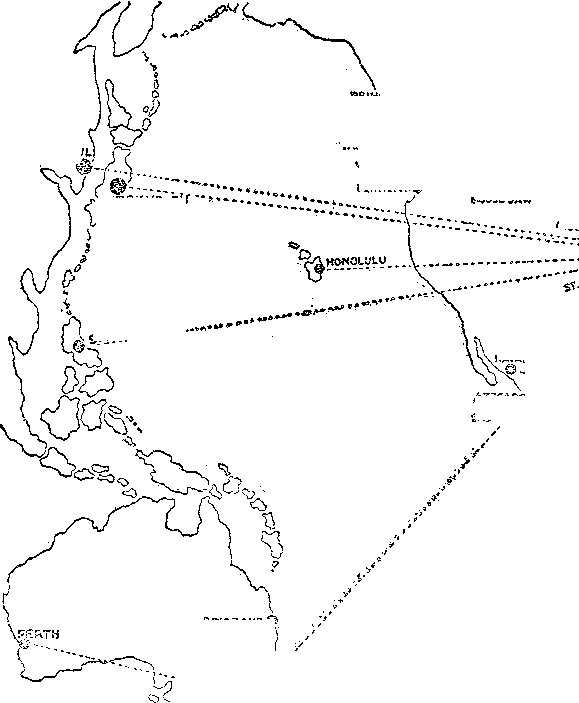
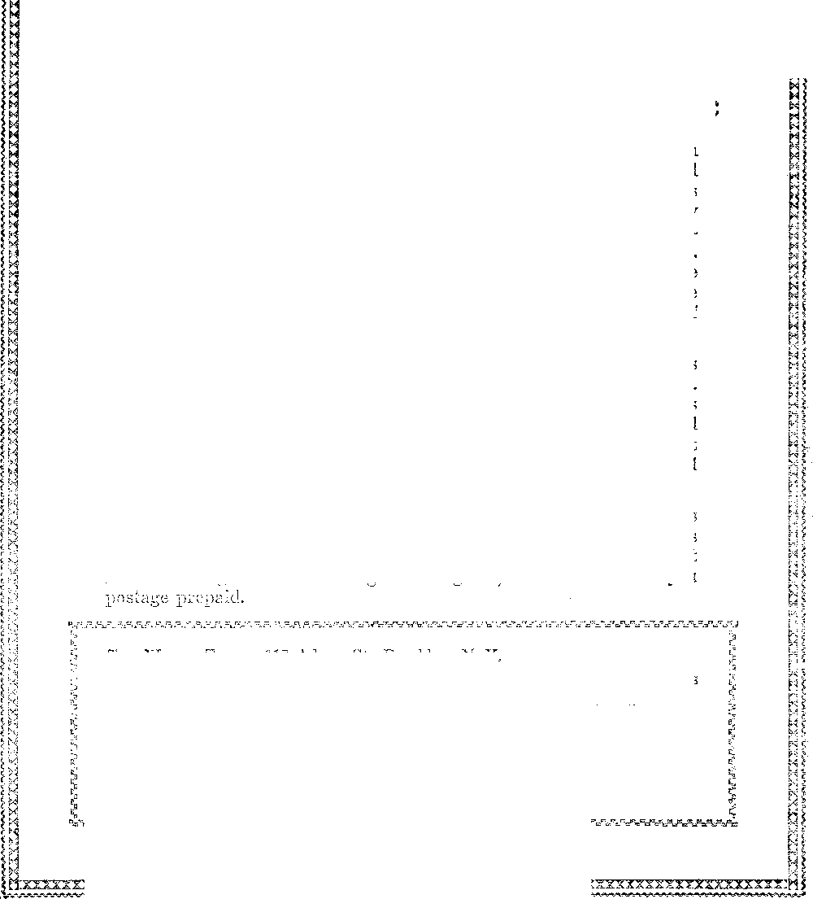

A JOURNAL OF FACT HOPE AND COURAGE
in this issue
COLUMBUS . . . it seems to have been more an act of God than a convention . . .
THE KINGDOM
THE HOPE OF THE WORLD
WARNING FROM JEHOVAH
BROADCAST, AND HOW
JEHOVAH’S WITNESSES
CONVENTION EXTENSIONS
SURPRISES
every other WEDNESDAY
five cents a copy one dollar a yeav Canada & Foreign 1.25
Vol. XII » No. 312
' September 2, 193
CONTENTS
The Kingdom, the Hope of
Who Will Deliver the Message . 776
Warning from Jehovah . . . 777
How the Message Was Received 778
Jehovah’s Kingdom and His Witnesses at Columbus . .779
Try to Picture the Scene . . . 779
How the Speech Was Uttered . 780
Hundreds of Transcription Stations........781
How the Message 'Was Projected 782
Some of the Responses . . . .783
The Columbus Convention
Extensions ....... 784
Jehovah’s Name for His People—Now . .
Resolution—A New Name
The Amenities of tpie Convention 789
Other Addresses and Other Speakers ......
790
The Highway of Holiness . . .790
Other Speakers of the Convention 792
The Big Surprises . . . . .-.793
A Surprise for the Colporteurs 793
The Real Convention . . . .794
God’s Care of the Colporteurs . 795
Miscellaneous Convention Items 796
Serving the King......798
The Hospital 'Was a Busy Place 798
We Note in Passing . . . . .799
Published every other Wednesday at 117 Adams Street, Brooklyn, N. 1'., U. S. A„ by WOODWORTH, KNORR & MARTIN
Copartners and Proprietors Address; lit Adams Street, Brooklyn, N. Y., U. S. A. CLAYTON J. WOODWORTH.. Editor ROBERT J. MARTIN .. Business Manager ’ NATHAN H. KNORR .. Secretary and Treasurer
Five Cents a Corr—?1.00 A Year Make Remittances to THE GOLDEN AGE Notice to Subscribers: For your own safety, remit by postal or express money order. We do not, as a rule, send acknowledgment of a renewal or a new subscription. Renewal blank (carrying notice of expirat-on) is sent with the journal one month before the subscription expires. Change of address, when requested, may be expected to appear on address label within one month.
Translations published in Finnish, German, Norwegian, Polish, and Swedish,
Offices in Other Countries
British ....... s .... . 34 Craven Terrace, London, W. 2, England
Canadian........... 40 Irwin Avenue, Toronto 5, Ontario, Canada
Australasian.......7 Beresford Rd., Strathfield, N. S. W., Australia
South Africa ............c Lelie Street, Cape Town, South Africa
{Entered as second-class matter at Brooklyn, N. Y., under the Act of March 3, 1879,
Velums XII Brooklyn, N. Y., Wednesday, September 2, 1931' ' Number 312
WHEN the people of the nations of the earth are confronted with a condition that threatens their very existence it is time for calm and sober thought that, if possible, the cause may be ascertained and that the true remedy may be embraced. To refuse to consider or publicly discuss such unhappy conditions for fear of provoking controversy is worse than folly. #
The truth is not controversial with those who are honest. Truth reveals what the people need to know.
The nations of the earth are now in sore need of the truth. The radio is one of the ways God has provided to get the truth to the people, and every radio station on earth should be diligent to broadcast the truth to the people in this very serious time in the affairs of men.
The economic conditions of America are bad. Similar distressing conditions prevail throughout all “Christendom”, yea, in fact, throughout the entire world. A few have grown very rich, while the numbers of the poor are increasing everywhere. It is claimed that there is an excess of production of food and of raiment, while at the same time there are millions starving and suffering from want of proper clothing.
The political conditions are bad everywhere. There is no ruling power or nation that feels safe and secure, and all are unable to cope successfully with the perplexing problems that confront them. Practically all the monarchies have perished from the earth, and democracy is more unsafe now than it was prior to the World War.
Moral conditions are also very bad. Crime is on the increase, particularly in the land called “Christendom”, and many women and even youths have fallen to a lower level than that of degraded men. Fear and perplexity grip the people and scarcely anyone feels secure in home, property or body.
Broadcast by Judge Rutherford at the Coliseum, Columbus, Ohio, July 26, 1931, on inconceivably the greatest radio hook-up In history. (Over five hundred stations carried this message.) The Warning with which this discourse concludes is the most astounding declaration ever made by man. Read carefully of earth’s only hope.
Regardless of who is the more reprehensible for these unhappy conditions, the indisputable fact is that fifteen centuries of the operation of “organized Christianity”, so called, has not lifted the human race out of degradation or given to the people hope.
The rulers and the people in all the nations called “Christendom” have claimed to believe that Jehovah is God, and have expressed faith in the Bible as His Word, and in Christ Jesus as the Savior of man. The question is now put squarely up to the rulers and to the people, to ■wit, Is that claim true and sincere? Jesus, with absolute authority, concerning God’s Bible said: “Thy word is truth.” If we believe that Jehovah is the true God, then why should we longer halt between His Word and the opinions or theories of imperfect men? I earnestly invite the rulers and the people to carefully consider the Bible in the light of present-day events, because therein is found the full information concerning the cause of the. world distresses and therein is plainly stated the only hope for man’s relief and deliverance.
Jehovah, the God of the Bible, is the only true God. He is the source of all life. Centuries ago He gave His word of promise that in His due time He would establish a government that would rule the world in righteousness and that under that government the rich and the poor, the strong and the weak, the Jews and Gentiles, the bond and the free, should all have an opportunity for the blessings of liberty, prosperity, happiness and life everlasting. (Gen. 22:18;
Isa. 9:6,7) That promise Being true, the day must come when those on earth would know that it is time for the establishment of God’s kingdom or government and for the blessings of the people to begin.
Satan the Devil has long been the invisible ruler of this world. He is the adversary or opposer of the true God, and the worst enemy of man, and has led the people into degradation that he might turn them all away from Jehovah. God could have restrained or killed Satan long ago, to be sure, but perfect wisdom marked out a different course. God first sent Jesus to the earth to provide redemption for the human race, and this Jesus did by the shedding of His own life-blood at Calvary.
When God raised up Jesus out of death and brought Him into heaven, He said to Him, as recorded in the 110th Psalm: ‘Wait until my due time comes to put the enemy Satan down, and to set up the righteous rule.’ In that period of waiting God has been taking out from amongst men a people for His name.
In that same time God has permitted the peoples of earth to try to form and carry on desirable governments. The nations called “Christendom” agreed and undertook to do that very thing. These agreed to accept the Bible as their guide, and during the past fifteen centuries have set up governments and claimed that such governments have ruled as the representatives of God on the earth. The facts, however, are that these nations in particular have forgotten God and have turned away from Him and have come completely under the influence of Satan, the enemy of God.
In 1914 the period of waiting named by Jehovah came to an end. Prior to that time Satan, the invisible ruler amongst men, had carried on without interference, but when God’s due time came He sent forth Christ Jesus to be the King of the world. He placed Jesus Christ upon the throne of authority. (Ps. 2: 6) In harmony with the Bible testimony of Revelation and other scriptures there immediately followed a war in heaven, with Christ and His angels on one side, and against Satan and his angels on the other side. That conflict resulted in Satan’s being cast out of heaven and down to the earth, and from then till now7 Satan the Devil is confining his operations exclusively to things of the earth. You wonder why the economic, the political and the moral conditions are so terrible in this day, and why they continue to grow worse. The answer is found in Revelation 12:12 in these w7ords: “Woe to the inhabiters of the earth, and of the sea! for the devil is come down unto you, having great wrath, because he knoweth that he hath but a short time.”
It was in 1914 that the Avar in heaven took place, and it was in that same year that Satan plunged the nations of “Christendom” into the great World War. Now call to mind that since the ending of that war conditions have continuously grown worse in the earth. The agencies of" Satan falsely charge Jehovah God with the responsibility for the calamities and crimes and wickedness that now afflict the nations and the people. Satan’s purpose in making this false charge is to cause the people to curse Jehovah God and to turn away from Him. Satan’s scheme is to induce the people to ignore the Bible and its authority and to look to men for aid and deliverance. Satan is thus practicing a great fraud upon mankind, and for this reason you see a studied effort to discredit the Bible and to keep the people in ignorance of its testimony.
Jehovah’s kingdom is already here. He has placed Christ Jesus, earth’s rightful Ruler, upon His throne of authority. Why then does not God destroy Satan and his organization and relieve the people? That is exactly what God is now about to do; but before so doing there is another work He will have done, and of this the people must now be informed.
God made man a free moral agent with the right to choose the course he will take. No man, however, could make such a choice without some knowledge. The World War ceased in 1918 for the very purpose of permitting a testimony to be given to the nations in order that the people might have an opportunity to choose the course they would take, that is to say, whether they would give their allegiance to God and His kingdom of righteousness or would continue to rely upon the feeble efforts of men. By the events of the World War, famine, and pestilences, and great distress that befell the nations during and after 1914, the second coming of Christ and His kingdom are clearly proven.
To those who have seen and believed these evidences, and who have devoted themselves to Jehovah, the commandment is given, in Matthew 24:14, to wit: “This gospel of the kingdom shall be preached in all the world for a witness unto all nations; and then shall the end come.” “This gospel,” or good news, must be told to “Christendom” now in order that the people might choose to give their allegiance to God and His kingdom under Christ. In obedience to this commandment men and women, with the aid of the radio and of books containing the message of truth, have gone, and are still going, to the people with the facts. A few have heard and rejoiced, while others have opposed, and multitudes remain indifferent.
Warning
It is apparent that a universal government of righteousness could not be fully established in the earth until first Satan’s wicked power and his organization are destroyed. Until criminals are fully restrained or destroyed there could be no freedom from crime and no safety to the lovers of righteousness. Until political dishonesty is destroyed there could be no righteous rule of the people. Until economic injustice and oppression cease to exist there could not be complete relief to the people. Until religious hypocrisy is destroyed the light of truth cannot shine fully into the minds of the people.
Therefore the first work of God’s kingdom of righteousness under Christ the King is to destroy the wicked organization of Satan and clear the ground, that there may be fully and completely established in the earth the righteous and peaceful rule of the people. For this reason it is written, in Revelation 16:13-16, that the combined forces of wickedness, under Satan, and the combined forces of righteousness, under Christ, are marching to Armageddon, which will mark the greatest battle and be a time of the greatest tribulation the world has ever known.
By His prophets Isaiah, Jeremiah and Ezekiel God has written Ills decree against “Christendom”, and she must fall. What is here said is not to be considered as a threat against any creature, but it is a warning to both the rulers and the ruled of “Christendom”. Upon those who are devoted to God the obligation is laid to give this warning, and if they should fail to do so Jehovah would make the very stones to cry out and tell the people.
“Christendom” is composed of the nations that call themselves “Christian”, and chief amongst these nations are those of America and the British Empire. Because “Christendom” has claimed to follow Christ Jesus such nations thereby entered info an implied contract, at least, to give heed to and to do the will of God; and for this reason greater responsibility rests upon these nations than upon the nations which are called “heathen”.
Today “Christendom” occupies a position corresponding exactly to that occupied by Jerusalem at the time of her destruction. Jerusalem was a type of “Christendom”; therefore the warnings given to Jerusalem by the prophets of Jehovah apply with stronger force to “Christendom” at this time. I wish that the rulers and the people might understand that nothing is here stated to provoke a controversy, but that the information is given as a ■warning because it is the will of God and because the people need to have this information before the greatest trouble that ever afflicted humankind falls upon them.
For “Christianity” there is just ahead the ■worst trouble that has ever befallen any nation. The reasons therefor are given by the Prophet Isaiah (24:3-5) in these words: “[Jehovah] hath spoken this word. . . . The world lan-guisheth, and fadeth away; the haughty people of the earth do languish. The earth [organized peoples of the earth] also is defiled under the inhabitants thereof, because they have transgressed the laws, changed the ordinance, broken the everlasting covenant.”
The laws of God are set forth in the Bible and define ail manner of crimes. The nations of “Christendom” have transgressed every one of these laws and been guilty of all manner of crime. The ordinances for the government of the church of God on earth were plainly announced by Jesus and the apostles and are set forth in the Bible. “Organized Christianity,” or “Christendom”, has changed these divinely provided ordinances and substituted therefor the idolatrous practices of men, thereby bringing great reproach upon the name of Jehovah God. To Noah God stated His “everlasting covenant”, in which is declared the sanctity of human life. Every nation of “Christendom” has broken the everlasting covenant by the unrighteous shedding of innocent human blood. ‘Therefore, says the Lord, His curse is upon the earth, and they that dwell therein are desolate, and the inhabitants of the earth shall be burned and few left.’
The law of all civilized nations denounces adultery or harlotry as a major crime. There is another great crime committed by organizations that have taken the name of the Lord, and which crime God names and denounces as adultery or harlotry. That crime consists in mixing God’s truths with the wicked things of the Devil and following Satan’s practices. Addressing those who have thus done, and defining the crime, it is written, in James 4:4: “Ye adulterers and adulteresses, know ye not that the friendship of the world is enmity with God? whosoever therefore will be a friend of the world is the enemy of God.” The people are witnesses to the fact that “organized Christianity” today goes hand in hand with the oppressive rulers of the world and is in fact a part of the world.
True Christianity was founded by Jesus, together with His faithful apostles. Concerning it God declares it was planted by Him as a noble vine. The duty and obligation laid upon true Christianity was and is to have and to serve but one God and to faithfully follow in the footsteps of Christ Jesus and to give full and unqualified allegiance to God’s kingdom.
Out from the “vine” of true Christianity have grown two great branches, to wit, the Catholic and Protestant religions. No one will attempt to deny the fact that both of these great religious branches have openly allied themselves with the political, commercial and military powers of the world. Today these two great religious organizations, together with their allies that rule the principal nations of the earth, constitute what is called “Christendom”, or “organized Christianity”. Both of these great branches of professed Christianity have opened their doors and their arms and invited and enticed men, regardless of impurity of faith or conduct, to enter their folds and partake of their delicacies. In order that they might make themselves more attractive, both have changed God’s ordinances of rule and worship in the church and have substituted therefor adulterous practices that have greatly reproached the name of God. Both have made the rich oppressor of the people and the cruel and harsh political ruler the chief or principal ones of their flocks and have pushed aside and oppressed the poor and the needy.
The ten tribes of Israel who built their capital city at Samaria foreshadowed the Catholic organization, while the two tribes that built their capital city at Jerusalem foreshadowed the Protestant religious organizations. What God said to those ancient nations through His prophets applies now with greater force and emphasis to modern “Christianity”.
The Catholic nations have had less enlightenment than-the Protestant nations; therefore the greater responsibility for the present world condition is upon the Protestant nations. As God punished the Israelites, so He has declared through His prophets that He will inflict great punishment upon “organized Christianity”, and the most severe part of that punishment will be upon the nations of “Christendom” that are called Protestant. Let the rulers and the people therefore take notice that shortly and within this generation there shall come upon the nations of “Christendom” the worst tribulation that has ever afflicted humankind, and this in order that all may know7 that Jehovah is the only true God and that His wrnrd and name shall be vindicated.
In more recent years there have been gathered together a company of Christian people who have been called by the name and title “Bible Students”. Among these there have been some who have disregarded God’s Word, rebelled against His commandments and opposed the public proclamation of His kingdom message and have followed their own selfish course and have brought great reproach upon the name of God. Such the Lord denounces as wmrkers of iniquity who shall suffer destruction with the others of God’s enemies. (2 Thess. 2:1-9) To such a warning is now7 due and is now given.
There are those outside of professed “Christianity” and who call themselves atheists and who are against all who have taken the name of the Lord whether they be false or true Christians. Those who take the lead in this class are such as the nation of Russia, and "which class was foreshadowed by the ancient people of Ammon. These atheistic enemies of God and His people have brought great reproach upon His name and His kingdom and have used their powers to keep the people in ignorance of the truth. Now let their rulers and people take notice of what God says concerning all who reproach His name. By His prophet Jeremiah He now gives warning to the nations and peoples of the earth in these words, to wit: “For, lo, I begin to bring evil on the city which is called by my name [that is, upon 'organized Christianity’, or ‘'Christendom’, that has taken the name of God and Christ], and should ye
[the heathen nations] be utterly unpunished? Ye shall not be unpunished: for I will call for a sword upon all the inhabitants of the earth, saith the Lord of hosts. Therefore prophesy thou against them all these words, and say unto them, The Lord shall roar from on high, and utter his voice from his holy habitation; he shall mightily roar upon his habitation; he shall give a shout, as they that tread the grapes, against all the inhabitants of the earth. And the slain of the Lord shall be at that day from one end of the earth even unto the other end of the earth; they shall not be lamented, neither gathered, nor buried; they shall be dung upon the ground. Howl, ye shepherds, and cry; and wallow yourselves in the ashes, ye principal of the flock; for the days of your slaughter and of your dispersions are accomplished; and ye shall fall like a pleasant vessel. And the shepherds shall have no way to flee, nor the principal of the flock to escape.”—Jer. 25:29, 30, 33-35.
Jehovah God by His mighty “right hand”, Christ Jesus, makes it known that He will smite the hypocritical and oppressive nations and will completely destroy Satan’s organization, that the people may be free to know and to serve the righteous God and Hve. Concerning this terrible trouble that is just ahead Jesus said, in Matthew 24:21: “Then shall be great tribulation, such as was not since the beginning of the world to this time, no, nor ever shall be”; but there shall be some saved.
Who Will Escape?
Who shall be brought through that great tribulation and have the first opportunity to receive the blessings of the Kingdom? Jehovah’s answer is found in Zephaniah 2:1-3. Such are those who try to do right and who want to learn the truth, and for that reason they are undesirable in Satan’s organization, and to them Jehovah says: “Gather yourselves together, yea, gather together, 0 nation not desired; before the decree bring forth, before the day pass as the chaff, before the fierce anger of the Lord come upon you, before the day of the Lord’s anger corne upon you. Seek ye the Lord, all ye meek of the earth, which have wrought his judgment; seek righteousness, seek meekness: it may be ye shall be hid in the day of the Lord’s anger.” To those who at this time are kind and considerate to the poor the Lord Jehovah says: “Blessed is he that considereth the poor; the
Lord will deliver him in time of trouble. The Lord will preserve him, and keep him alive; and he shall be blessed upon the earth; and thou wilt not deliver him unto the will of his enemies.”—Ps. 41:1, 2.
In,the land of “Christendom” today there ara millions of people of good will and honest hearts. It is this class of people who, by obeying the above commandment of the Lord, will escape the terrible drubbing which God will give to “Christendom”, and they will be brought through and be the first recipients of the blessings of His government of righteousness.
Hope
The present unrighteous governments of the world can hold out no hope whatsoever to the people. God’s judgment against them declares they must go down. The hope of the world, therefore, and the only hope, is the righteous kingdom or government of God with Christ Jesus as invisible Ruler thereof. Immediately following the great tribulation which is just ahead Christ Jesus the King will begin the reconstruction of the world. He will rule in righteousness, and when His judgments are in the earth the people will learn righteousness. (Isa. 26: 9) He will judge the people in righteousness; which means that then all unrighteousness will be restrained and the people will be led in the right way. (Acts 17:31) As stated in 2 Timothy 4:1, He shall judge the living first, and then the dead. The millions of people that shall survive the terrible trouble and be brought through it will receive instruction, aid and comfort, and the sick 'will be healed and the weak be made strong.
Under the righteous reign of Christ there will be no multitudes of people starving for bread. By His prophet Isaiah (25: 6) God declares that in that kingdom shall the Lord of hosts make unto the people a feast of fat things, and they shall eat. There will be no bread lines 'where the poor wait for a hand-out while a few of the rich live wantonly and in luxury, because it is written in the Word of God that Christ shall reign in righteousness and with righteousness shall He judge the poor. (Isa. 11:4; 32:1) Then “the meek also shall increase their joy in the Lord, and the poor among men shall rejoice”. —Isa. 29:19.
There will be no more burdensome taxation for war purposes, because God’s promise is that there shall be no more war. (Isa. 2:2-4) The
burdens of the government will be upon the shoulder of the Prince of Peace, and of His government and peace there shall be no end. (Isa. 9: 6, 7) There will be no more cruel landlords who by unfair means possess and hold the houses and the land and make serfs of the common people, because it is written in the Word of God that in the kingdom of God they shall sit every man under his own vine and fig tree and none shall make them afraid. The people will then build their own houses and live in them and will plant their own crops and eat the fruits thereof and rejoice and be glad.—Isa. 65:21; Mic. 4:1-4. '
Worry and distress take millions early into the grave. In the Kingdom there will be no occasion for worry and distress. The knowledge of the glory of God shall fill the earth, and the people will know that by doing right they shall be made healthy and strong and shall live, because it is written: “Behold, I will bring it health and cure, and I will cure them, and will reveal unto them the abundance of peace and truth.” (Jer. 33: 6) ‘Then the inhabitants shall no more say, We are sick.’—Isa. 33: 24.
Under Satan's ’wicked rule billions have died and gone into the tomb. Under the righteous reign of Christ these shall be brought out from the grave and given a hope of life. (John 5: 28, 29) Death has brought indescribable sorrows and crying upon the human race, but under the reign of Christ death and the grave shall be destroyed and all who obey the Lord shall live. (1 Cor. 15:25, 26) All the sorrow and suffering and pain that Satan has brought upon the human race God’s kingdom under Christ will take away, as it is written in Revelation 21:4: “And God shall wipe away all tears from their eyes; and there shall be no more death, neither sorrow, nor crying, neither shall there be any more pain; for the former things are passed away.”
Jehovah said to Abraham: Tn thy seed all the families of the earth shall be blessed.’ That promised seed is His Christ, the instrument which God will use to extend to all humankind the blessings of life everlasting. (Gen. 12:3; Gal. 4:8,16, 27-29) The Word of Jehovah God is true, and Ue will fulfill every promise. Satan and his agents have denied the Word of God, reproached His name, and turned the people away from the path that leads to life. The time must come when the word and name of Jehovah will be vindicated; and this He will do in order that the people might know that Jehovah is the Almighty God, the Most High, “the Father of mercies, and the God of all comfort,” and the One alone from whom the blessings of life can come.
The nations of this world are hopeless, and the present governments can hold out no hope whatever to suffering humanity. Why then should the people continue to look to such vain and hopeless schemes as leagues, peace pacts, and hypocritical religion for help ? Why look to that which is doomed to a speedy and complete destruction ?
The hope of the world is the kingdom of God under Christ, the Prince of Peace. In this brief space I can call attention to but some of the important parts of the truth concerning that kingdom. I urge upon the people the necessity of informing themselves concerning the kingdom of God. Provide yourselves with the publications or books that w’ill enable you to find these truths in the Bible, and then learn and give heed to them.
The Kingdom is already here. God gives commandment that the time has arrived when information thereof must be given to the people. The day of God’s vengeance must be declared in the land, because Jehovah has so commanded. (Isa. 61:1, 2) Within a brief space of time and 'within the present generation “Christendom” and the nations that rule therein shall be completely destroyed. This will be done, not by the fighting of the common people against the rich, but will be done by Christ Jesus as the instrument of destruction in the mighty hand of Jehovah God. When this grea.t act is accomplished, and “Christendom” and all workers of iniquity lie as a heap of ashes, all creation will know that the hand of the Almighty God did it. This He will do for the vindication of His name and for the good of all those who love righteousness.
Who Will Deliver the Message
This is not a popular message. The leaders and rulers of “Christendom” will deny its truthfulness. They will dispute it and scoff at it. They will scorn and oppose it and denounce those who do deliver the message. It was even so when God’s prophet warned Jerusalem. Today there is but one class of men and women under the sun who have the faith and courage to deliver this message of truth concerning the fall of “Christendom” and of Satan’s entire organization and concerning the hope for the people in the kingdom of God, and that class or company of people is made up of those who are wholly devoted to Jehovah and to His kingdom. They seek not the approval of men, nor do they count their earthly lives dear unto them. Their endeavor is only to be obedient to- God’s commandments.
While they love Charles T. Russell for his work’s sake as a follower of Christ, they cannot properly be called “Russellites”. While they are students of the Bible, they cannot be rightfully called by the name “Bible Students” or “Associated Bible Students”. They are the followers of no man, nor do they take the name of any man. Having been bought by the blood of Christ Jesus, justified and begotten by Jehovah, and called to His kingdom, and being wholly and unreservedly devoted thereto, they delight to taka the name the Lord gave them, which is Jehovah’s witnesses.
I therefore offer this resolution and call upon every person who before God and men can truly and honestly claim the qualifications of full devotion to Jehovah and His kingdom to vote for its adoption and then to prove their devotion to Jehovah God, and their allegiance to His kingdom, by giving diligence in sending forth this message of the kingdom of God to the nations and to the peoples of the earth, and to thereby have some part in the vindication of Jehovah’s name.
(The resolution follows.)
Wamisig from Jehovah
To the Rulers and to the People :
Be it known: That there is but one true and Almighty God, whose name is Jehovah, the Most High; that there is but one Redeemer of man, whose name is Christ and whom God has anointed and installed as King of the world; and that His kingdom is now come, and is the hope of the peoples of the world.
That Satan, the Devil, is the great enemy of God and of man. For centuries he has been the invisible ruler of the world, and has brought great reproach upon the name of God and has led men into degradation; that the condition of suffering and distress now in the earth is due to the wickedness of Satan and his agents; that the time has come, as God declares, when Satan’s rule shall for ever end; that in 1914 Satan was cast out of heaven down to the earth; that within a short time from now Jehovah by Christ will destroy Satan’s power and organization in the earth; that before so doing, however, it is the expressed will and commandment of Jehovah God that His message of warning shall be delivered by His witnesses to the rulers and to the people in order that those who hear may have an opportunity to take their stand on the side of God and His kingdom and thereby find refuge in the time of trouble; that the testimony of warning that must be given is, in brief, the following:
The leading nations of the earth which claim to be Christian nations, and which are therefore called “Christendom”, have defamed and reproached the name of Jehovah God, and are a part of Satan’s organization and shall suffer destruction.
The other nations, called “heathen”, have also reproached God’s name, are a part of Satan’s organization, and shall also fall. God has given “Christendom” more enlightenment and greater opportunities than the heathen, to all of which “Christendom” has proven unfaithful, and therefore she shall suffer the greater punishment at the hands of Jehovah. Within a short space of time there shall come upon “Christendom”, which is called by the name of the Lord, the greatest tribulation that has ever befallen any people.—Jer. 25: 29-35.
To enable the people to better understand God’s reason for bringing this tribulation upon the nations the history of the Jews was caused to be recorded in the Bible and is here mentioned. The Lord has declared that what happened to the Jews typified and foreshadowed w’hat shall come upon “Christendom”, or the professed “Christian” nations of the world. The Jews w’ere God’s covenant people, but they became unfaithful to their covenant and turned to idolatrous practices. God sent His prophets, who warned the Jews of His purpose to destroy their nation because of unfaithfulness. The leaders amongst the Jews ignored the warning, scoffed at the testimony of God’s prophets, and then falsely prophesied to the people that no harm was coming to that nation. But shortly thereafter the Jewish nation was swept out of existence. That history is being repeated.
JEHOVAH planted true Christianity as a pure and noble thing, but shortly after the death of the faithful apostles of Jesus Christ the commercial and political rulers of the -world, aided and abetted by the clergy, adopted “Christianity” and called it their religion, and then changed the ordinances of God to suit their own selfish purposes, broke the laws of God, and particularly “the everlasting covenant”, and have brought great reproach upon the name of the Most High. Today the leading nations of the world are called “Christian”, and they practice a formalism of religion -which is called “the Christian religion”, whereas the leaders thereof deny the inspiration and truthfulness of God’s Word, deny the blood of Jesus Christ as the redemptive price of mankind, and deny God’s kingdom as the means of restoring and blessing the peoples of earth. “Organized Christianity,’’ therefore, is an integral part of Satan’s organization and is against God and His kingdom, and hence must be destroyed in order that the kingdom of righteousness may rule the world.
The World War came in 1914, with its attending distressing conditions, and in exact fulfilment of the prophecy of Jesus Christ, and furnished the complete proof to all “Christendom” that the world had ended and. that Christ’s kingdom was at hand. (Matt. 24:3-14) These facts were especially called to the attention of the leaders of “Christendom”. Had “Christendom” then given heed to the counsel of God and stood in His Word she might have been spared from destruction. Not only did “organized Christianity” treat the counsel of God with contempt, but she openly endorsed the Devil’s makeshift and called it the political expression of God’s kingdom on earth. “Christendom’s” leaders and commercial, political and religious prognosticators now freely predict that the present condition of suffering and distress is but temporary and will soon pass away and that the nations ruled by unrighteous men will soon establish lasting peace and prosperity. Like the false prophets to the Jews, these present-day predictors prophesy falsely. (Jer. 28:1-17) Let the people take notice that “Christendom” will never recover, but soon will go down in the worst tribulation that has ever befallen any nation of the world. Her destruction will not come by the poor people fighting against the rich, but will result from the punishment inflicted by Jehovah God and His King.—Rev. 19:11-21.
Jehovah declares that there shall be such a great number of people slain in the time of trouble that the survivors will not bury them; but further states that some portion of the people will be spared, taken through the trouble and saved; and that the ones spared will be those who now seek to know and to do God’s will.
The hope of the world is God’s kingdom, and there is no other hope. Immediately following the great tribulation Jehovah’s kingdom will establish peace and prosperity in the earth. All order-loving people should therefore be diligent now to learn of and concerning the kingdom of God, and should take their stand on the side of His kingdom and give their allegiance to God and His King and thus put themselves in line for the everlasting blessings that shall come to those who are obedient and faithful to Jehovah and His King.
This testimony of warning is not given by “another religious cult that is engaged in propaganda or in proselyting”. It is given by Jehovah’s witnesses. .Those who give this testimony do not seek members or solicit money. Upon all those who have wholly devoted themselves to His kingdom, Jehovah has laid the obligation to give this testimony of warning. The responsibility is upon these witnesses to give the testimony and warning, and those who hear are responsible to God for what course they take.
We declare our allegiance is wholly to God and His kingdom, and we delight to be His witnesses and to bear His testimony to the honor of His name. Our faith forbids and precludes us from engaging in war or in any other enterprise that would work harm or injury to mankind. We are for Jehovah’s kingdom of. everlasting peace.
The time is due for th© vindication of Jehovah’s great name, and as His authorized witnesses, and in obedience to His commandment, we do now solemnly declare this warning and deliver this testimony.
Within a very short time God will destroy all of Satan’s organization, which includes “Christendom” and all the nations that oppress the people and defame His name. Immediately following that great destruction, God by Christ will fully establish His government of righteousness in all the earth. Let the people therefore cease to give heed to schemes of reform brought forth by men. The kingdom of Jehovah God is the hope of the world. Let all who love righteousness give full allegiance to Jehovah and to His kingdom and receive His blessings.
How the Message Was Received
We cannot say, and we do not particularly care, how Judge Rutherford’s extraordinary message of Sunday noon, July 26, was received by the world. Doubtless the Ohio State Journal, of Columbus, fairly illustrated the general attitude of friendly skepticism, coupled with a certain amount of respect, which will deepen as its editors come to see the fulfilments of the prophecies which were drawn to their attention. After speaking rather lightly of the opinions of those who foresee the collapse of civilization and the dawn of the Millennium, the Journal, in its issue of July 28, editorially said:
It is furthest from our purpose to discredit Judge Rutherford. By his devotion to his cause, by his sincerity to an ideal, by his fearless leadership which has taken him and his flock through ridicule and scorn, he has by his strength caused thousands to find a more comfortable niche in life. The religion he espouses is idealistic in the extreme, as witness his strong indictments of both the Catholic and Protestant arms of Christianity. But one must admit that he has the courage of his convictions, and angels can have no more. Whether with his doctrines it is possible to agree, his character and his fearlessness are attributes to be admired.
THE convention which was held at Columbus, Ohio, July 24-30, 1931, cannot be compared with any other convention ever held on this earth. It was different. Thinking of it, in retrospect, it seems to have been more an act of God than a convention, because its outstanding feature was the most astounding statement ever addressed to the ruling factors of this earth, and it was given in a setting as unique as the message itself. Further, it was accompanied by the complete identification of those who shall take that address into every corner of the earth as a unique people, separated to the use of Jehovah God, a people in deed and in truth for His Name.
There have been many great conventions at the Ohio State Fair Grounds in Columbus. The International Bible Students Association held one there in July, 1924, at which was presented and adopted the Indictment found on pages 120-126 of Judge Rutherford’s Light, Bock One. There is every reason to believe that that Indictment, and the supporting discourse, “Civilization Doomed,” was the “third trumpet” of Revelation, eighth chapter, and that that particular Columbus convention was therefore foreseen by our heavenly Father, and provided for by Him.
Nevertheless, what took place in 1924 at Columbus was only leading up to what occurred there seven years later, and this would most certainly be agreed to by all who were present at Columbus in 1931 and had knowledge of what was going on about them.
The only thing that remotely compares with what took place in the Coliseum at Columbus on Sunday, July 26, is something that occurred, probably in the plains of Mesopotamia, more than four thousand years ago, and that was merely a picture of what was to occur in the year of our Lord one thousand nine hundred and thirty-one.
There were only a few thousand people in the earth in the days of Noah. The families were small; the children were few and far apart; there was no need to roam; there was plenty of room for everybody in the neighborhood where the first man was ejected from the garden of Eden. When Noah warned the world of an impending flood he reached, directly or indirectly, about all the human family. And the good and evil angels knew about it. They knew that he was the divinely commissioned mouthpiece of Almighty God.
Noah’s declaration of the purposes of God came true. It was not because Noah uttered them; it was because they came backed with the authority of the Maker of the universe, the Creator and Sustainer of heaven and earth. And it was the Son of God who said, ‘As it was in the days of Noah, even so shall it be in the days of the Son of man.’
If there was any doubt about just what that text meant in the past there is no doubt about it now. It was fulfilled at Columbus on July twenty-sixth, when Judge Rutherford told the whole world, Christendom, all the civilized nations, that because they have presumed to call themselves by the name of Jehovah God, and to call upon His name, and yet have declined to be governed by the laws 'which have come forth from the only fountain of authority in the universe, therefore their end draws on apace. The flood of God’s wrath, not a literal flood, but that which the flood represents, the righteous judgment of an indignant and offended Deity, is about to sweep them away.
Try to Picture the Scene
Try to picture the scene of Noah addressing all the sons of Adam and w'arning them that their end has come (unless they get into the ark of safety). Then, in a moment, swing your mind over four thousand years into the future, into the great day of Jehovah God, and see the antitype fulfilling before your eyes.
The radio was reserved by the Lord for just such a day; the loud-speaker was reserved for just such a day; the telegraph and telephone were reserved for just such a day. Before Christendom should fall, and be utterly destroyed, He would serve such notice, that future ages would know that every word of Jehovah God is true. What He says will be done will be done. And before He does it He gives such notice, that all are duly warned. Today we announce, for the first time in history, that this warning has been given to the world. Christendom totters on the brink of ruin. The Almighty God has decreed that ‘as it was in the days of Noah, so shall it be in the days of the Son of man’.
THE way in which' a thing is done is often of as much importance as the thing itself. The setting in which Judge Rutherford’s address at Columbus was given was equal to the magnitude of his theme. In more important respects than could truly be said of any other utterance of man, it was a message to the whole world, and virtually given to them at one time. No other message ever had so great an initial impetus. Let us consider the facts and we shall plainly see the hand of our God.
Our Lord had some great audiences when He was here in the flesh. We know that on one occasion He preached to at least five thousand men besides women and children, for He fed that many after He had preached to them the good news of the Kingdom. We know that on another occasion He preached to at least four thousand men besides women and children, for He fed them too.
These things show us that our Lord had a remarkable voice. There is only once in a while a man, here and there, that can make himself heard by an audience that runs into the thousands, and when it gets into the four and five thousands he is quite lost in the involuntary hubbub that accompanies a great concourse of people.
Barely ten years ago the public-address system was developed which enabled a speaker to reach any part of his audience, no matter how large it might be. This is done by amplifiers and loud-speakers, arranged so as to cover all parts of the auditoriums or grounds where the address itself is being delivered.
At the same time the radio began to come in. Wonderful beyond description are the things that have been done and are being done over the radio in proclaiming the gospel of the Kingdom. The Lord is using it in the most stupendous way to break down prejudice and let the light of truth stream in.
Over a single radio station, if the people are listening, a man might address many times a million people at one time. Before such an opportunity previous privileges of proclaiming the truth fade into insignificance.
At first Judge Rutherford used one station, now and then. That was a great privilege. Then it was our own station, WBBR; then several such stations "were used more or less, and at length there were hook-ups, several stations tied together by telephone lines, all receiving and distributing the same message at the same time.
At Toronto, in 1927, the Watchtower hookup of 53 stations was, at that time, the largest in the history of radio; this was surpassed in 1928 at Detroit, where the Watchtower hookup of 103 stations was 26 more than in any other up to that time.
Concerning the great hook-up Sunday noon, July 26, 1931, that carried Judge Rutherford’s address “The Kingdom, the Hope of the World” to all of North America, the American Telephone and Telegraph Company said, in a nutshell, “This particular network is the largest individual network that has ever been on the air.”
As to the details: In the wire-connected group, in addition to the main pick-up point in the Coliseum at Columbus, the set-up embraced 156 service points on the Bell System lines, and 8 private line points in addition, making a total of 164 broadcasting outlets for the full Columbus program. This of itself was much the greatest radio hook-up in history. Of these broadcasting points, 147 were in the United States, 15 in Canada, 1 in Cuba, and 1 in Mexico.
To adequately care for the handling of the hour’s program from 12:00 to 1:00 Sunday, July 26, through these 165 broadcasting stations required 24,700 miles of program circuits and 50,000 miles of coordinating telegraph circuits. At 250 points along the way there were boosters or repeaters in which special amplifying apparatus was employed to maintain the high standard of transmission of the program, which was required.
At the time this Watchtower program was on the air there were between 900 and 1,000 telegraph operators, technical and repeater men, giving their personal attention to see to it that everything went smoothly in the particular section of the country in which they were located and in the particular portion of the work entrusted to them.
For the coordinating circuit, 12 telegraph coordinating circuits covering the country were used. For its own testing purposes the telephone company’s organization had 20 wires in use. At the time of the great lecture, the area under the speaker’s platform "was transformed into a beehive of dozens of telephone -and broad-
casting experts and telegraph operators who were there to make certain that the biggest hook-up in history would be the best; and it was.
The experts said that never had any big or little program ever gone out .on the air so perfectly. Everything wTas timed to the second and went off exactly as planned. The weather was perfect radio iveather, which is unusual for midsummer. Apparently the Lord took the static out over nearly all the Western world.
To make sure that nothing would prevent perfect projection of the program, there was a duplicate layout of the whole transmitting apparatus from the point of origin in the Coliseum to the main control point at Cincinnati.
From Cincinnati the message went out to twelve different parts of the country, where it was again split up, so as to reach the transmitters of all the radio stations in the hook-up of those sections.
The telegraph operators in the Coliseum knew every moment just how the message was coming out through every station, receiving reports every few seconds. But there was nothing to report. Everything went through perfectly.
Never in its history has the professed enemy of the truth, the National Broadcasting Company, put on such a successful chain broadcast. There is no doubt that the angelic hosts of Almighty God were on the job.
In the providence of Jehovah, thousands in the Rocky Mountain region heard the address of Judge Rutherford on July 26 over the National Broadcasting Company’s own superpower station KOA of Denver, Colo. On the other hand, listeners in New York and New England, accustomed to hearing Judge Rutherford over WGY, turned their dials on July 26 to other stations to hear him, by reason of the fact that the Schenectady station, recently taken over for operation by the same National Broadcasting Company, had sheepishly yielded its facilities to the temporary dominance of the Satanic Protestant-Catholic-Jewish “shepherd” combine to which the Columbia Broadcasting System as well as the National Broadcasting Company have now surrendered complete responsibility for providing and controlling so-called “religious” broadcasting over their respective nationuvide networks. See Mark 3: 25, 26; Jer. 25:34,35. ■
Mention is made here of typical local arrangements to bring this program within reach of chose without radio receiving sets. In Boston, Mass., by means of the public-address system, Judge Rutherford, speaking at Columbus, addressed an audience estimated at between five and ten thousand persons gathered in Boston Common, around the loud-speakers installed in the Parkman bandstand. It is known that he addressed similar audiences at Bienville Park, Mobile, Ala., at Belle Isle Park and Palmer Park, Detroit, Mich., as well as in scores of other places elsewhere, including school auditoriums, public squares, bathing beaches, forest reserves, theaters, and in several churches.
Hundreds of Transcription Stations
Besides the 163 broadcasting outlets of the wire-connected group, more than three hundred forty stations served well their respective audiences by the wonderful electrical transcription method, which enabled other millions to hear the address over stations to which, for one reason or another, the program could not be delivered at the time it was given in Columbus.
The transcription stations were in every part of the world, Europe, British. West Indies, Hawaii, Alaska, Cuba, Canada, Australasia and the United States. In Australasia, fifteen of these transcription stations were in circuit at one time, constituting the largest Australasian broadcast yet made. The fifteen stations were connected by five thousand miles of land lines, constituting a marked achievement for that part of the world.
Prior to the broadcast, everywhere zealous, capable and determined men, women and children made it their business to see that the people were notified to listen in. Of six million folders distributed.from door to door, calling attention to the Sunday lecture, 100,000 were put out in St. Louis, Mo., the oldest 'worker being about 70, and the youngest 5.
On Friday and Saturday preceding the Sunday lecture the conventioners placed these folders in every home in Columbus and within a radius of sixty miles therefrom, covering seventeen counties in the heart of the Buckeye state.
In the streets of Columbus the “Sound Truck” of Station WHK of Cleveland slowly wended its way, with four great horns atop its roof sending out in as many directions the invita-
tion to hear the Sunday program. At Los Angeles, Calif., a blimp airship flying low over the city and surrounding communities, performed like service by means of public-address apparatus which it carried.
As it will be of interest to many, we publish here a map showing the location of the special chain stations of the big hook-up and the location of such of the transcription stations as were in North America. It can be modestly stated that every community on the continent was well served.
IT IS good to know that a message of such world-wide importance was well projected, speaking now from an entirely physical or technical point of view. The telegrams all show this, and we give a digest of the final comments of managers of radio stations that were in on the wire-connected part of the hook-up.
Havana, Cuba. “Reception marvelous, crystal clear; no interruptions.”
Reyno sa, Mexico. “Volume and quality OK.”
Mobile, Alabama. “Program fine, no interference, quality very good, overall handling at the job fine.”
Messages of like import, all without a word of adverse comment came from: Fort Worth, Tex., Dallas, Tex., Abilene, Tex., El Paso, Tex., Sacramento, Calif., Long Beach, Calif., San Jose, Calif., Birmingham, Ala., New York, N. Y., Brooklyn, N. Y., Los Angeles, Calif., Stockton, Calif., Binghamton, N. Y., Fall River, Mass., Pittsburgh, Pa., Dayton, Ohio, Williamsport, Pa., Indianapolis, Ind., Fairmont, W. Va., Charleston, W. Va., Toledo, Ohio, Hamilton, Ont., Portland, Oreg., Colorado Springs, Colo., Salt Lake City, Utah, Pocatello, Idaho, Boise, Idaho, Reno, Nev., Wichita Falls, Tex., Phoenix, Ariz., Norfolk, Va., Richmond, Va., Sydney,
N. S., Spartanburg, S. C., Louisville, Ky., Gloucester, Mass., St. John, N. B., Columbus, Ga., Atlanta, Ga., Brownsville, Tex., Worcester, Mass., Superior, Wis., Jackson, Mich., Milwaukee, Wis., Racine, Wis., Hollywood, Calif., San Francisco, Calif., Oakland, Calif., Edmonton, Alta., Alexandria, Va., Wilmington, N. C., Lincoln, Nebr., Janesville, Wis., Asbury Park, N. J., Davenport, Iowa, Madison, Wis., Cleveland, Ohio, Memphis, Tenn., South Coffeyville, Oida., St. Joseph, Mo., Columbia, Mo., Oklahoma City, Okla., Shreveport, La., Houston, Tex., Amarillo, Tex., Topeka, Kans., La Crosse, Wis., Harrisburg, Pa., Reading, Pa., Altoona, Pa., Emory, Va., Knoxville, Tenn., Charlotte, N. C., Scranton, Pa., Denver, Colo., Grand Junction, Colo., and Casper, Wyo.
The following stations reported slight differences in time of starting, varying from a few seconds to four minutes ahead of time, while a few others had it that the program v/as a few seconds late. The Lord cannot be held responsible to see that all the second hands on all the watches and clocks in the world are in exact agreement. Barring time differences everything ■was OK at New Orleans, La., Fort Wayne, Ind., Albany, N. Y., San Antonio, Tex., Youngstown, Ohio, Great Falls, Mont., Billings, Mont., Bismarck, N. Dak., Wheeling, W. Va., St. Paul, Minn., Spokane, Wash., Fargo, N. Dak., and Calgary, Alta.
There was a slight hum at the following stations, which otherwise reported excellent reception. The hum was of but two or three minutes duration. Victoria, B. C., Eugene, Oreg., Vancouver, B. C., Wilmington, Del., Bellingham, Wash., Medford, Oreg., London, Ont., Akron, Ohio, Philadelphia, Pa., Wenatchee, Wash., Boston, Mass., Roanoke, Va., Sioux City, Iowa, St. Louis, Mo.
’ And there were slight hums, hits, scratches, Morse clicks or other trifling disturbances for a minute or so at Tacoma, Wash., Washington, D. C., Augusta, Ga., Miami, Fla., Tampa, Fla., San Diego, Calif., Orlando, Fla., Seattle, Wash., Portland, Oreg., Bay City, Mich., Syracuse, N". Y., Buffalo, N. Y., Asheville, N. C., Cincinnati, Ohio, Columbus, Ohio, Oil City, Pa., Rochester, N. Y., Kansas City, Mo., Chicago, Ill., Yakima, Wash., Jacksonville, Fla., Raleigh, N. C.? Atlantic City, N. J., and Pueblo, Colo. In midsummer, the season of thunderstorms, it is astonishing that there was so little trouble of any kind; no trouble anywhere interfered with the message’s going over perfectly.
Some of the Responses
IT IS the ones that are with Judge Rutherford in his fight whose opinions as to the value of his great discourse of Sunday noon are really worth the most. Better than any others they know the sure foundation upon which it was built. When, at the conclusion of the address, he put the motion that the Warning should be endorsed by the convention, every man and woman in the great audience arose and shouted “Aye” in a volume of sound that made the rafters of the Coliseum ring. We have not room to give the many supplementary responses that came in by wire.
Fresno, Calif., wired: “Greetings to you and all of the ‘servant’ assembled. Fresno ecclesia, assembled tonight in special testimony and thanksgiving to Jehovah, wishes to acknowledge the reception of your wonderful message over the radio and thank you for arranging our participation in this world-wide witness. We wish to go on record that by unanimous vote we have adopted the resolution presented by you and pledge herewith our continued cooperation and joyful collaboration with the Watchtower and you our dear president and fellow brother in Christ. We are pledged to know no remedy but “The Kingdom, the Hope of the World”.
Saskatoon (Sask.) ecclesia wired: “Reception wonderful; we vote ‘Aye’ with you in declaration.”
Other groups here and there over the world wired as follows:
Glens Falls, N. Y. “Full allegiance Jehovah only hope; no other; four listening WOKO, Albany; splendid message, no interference.”
Washington, D. C. “Congratulations. Lecture most encouraging and thrilling; every word distinct, Christian love.”
London, Ont. “Greetings. Lecture came in fine; best ever. Friends here thrilled with joy.”
Houston, Tex. “We gladly vote for the adoption of the resolution you read, which we have just heard over the radio. God bless you.”
Hallowell, Me. “Hallowell class appreciate your wonderful warning to the world. Reception splendid over WHDH. We are with you.”
Winnipeg, Manitoba. “Greetings. Ecclesia resolved to send message of love and assurance of loyalty and cooperation and prayers that Lord’s richest blessing will rest upon worldwide broadcast.”
Zurich, Switzerland. “We declare ourselves joyfully ready to stand for Jehovah and His King in the day of decision.”
Jacksonville, Fla. “A wonderful message; truly the only hope of the world.”
Pittsburgh, Pa. “We pray Jehovah’s richest blessings for your wonderful testimony.”
Seattle, Wash. “Your marvelous message received perfectly here with great enthusiasm.”
Jacksonville, Tex. “Lecture came in clear and strong.”
Edmonton, Alberta. “Reception excellent; beautifully clear; grand; praise Jehovah; love to all.”
Bangor, Me. “WHDH clear and plain; WABI and WLBZ also; God bless you, Brother Rutherford, in His service.”
(Continued on page 785)
WE NOW come to one of the most extraordinary features of the Columbus convention, and that is that, homeward bound, the speakers at Columbus, and especially the house-to-house workers, the witnesses, participated in other conventions located radially from the Ohio city, at Cleveland, Buffalo, Detroit, Chicago, St. Louis, Indianapolis, Cincinnati, Pittsburgh and Washington.
It may be argued that Judge Rutherford could not be present at each of these Columbus convention extensions, and it is quite true that in person he could not, but at each of these the address that he gave at Columbus, “The Kingdom, the Hope of the World,” was available for house-to-house distribution, and thus his message went along with the workers wherever they went.
And this is not all. Not only were there thus ten conventions all in one in the United States, but at the same time that the nine Columbus convention extentions were taking place in the United States, there were twenty-nine Columbus convention extensions taking place in Canada, seven taking place in Mexico, eight taking place in the West Indies and South America, eight taking place in Africa, seven taking place in Hawaii and Asia, nine taking place in New Zealand and Australia, and eighty-eight taking place in Europe. And thus the Columbus convention extended all over the world, and, as Judge Rutherford put it at the closing' session, will go on and on and never cease, because it is God’s work, His message to all men, and for that matter to all creation.
We are privileged to present herewith a map showing the 166 cities in every part of the earth which participated in the closing sessions, July 31,1931, and August 1 and 2,1931, of the great Columbus convention.
We submit that nothing like this ever took place in this world before. If wholly unacquainted with the Lord or His ways of doing things we would be compelled to recognize this as one of the most phenomenal things that ever occurred on the planet, and would be bound to look for some explanation of it. Knowing some
QttSLSOH
KAMSACK
MOOSS JAW
SASKATOON
CALGARY O-----
EDMONTON*
SEOU
'*X5brani»h •
w
CHICMMiO( V
'"OlAMAp.,,. '\ i
MONTEI
brsbaweO.
WCMshu-isiaTow
xTOKyO-FU
Vancouver -----O----—
victoriaO.............
\ med;c*me hat
PENTICTOH0 —
NAVAJ04 ^A..nc0
ATZCAPCTZaGo""®^^
SAliMACRUZ O i
STR?".. '
------'
thing of the Lord, and the times in which we live, it is impossible not to see in it the hand of God.
One can but wonder what must be the reaction of the Devil and his supporters, visible and invisible, to all of this. They cannot deny the growing power and the growing boldness of Jehovah’s government in the earth at this time.
(Continued from page 783)
Toronto, Ontario. “Praise Jehovah. Reception here perfect; message clear and convincing; will gladly join in a world-wide distribution of ‘The Hope of the World’.”
Oklahoma City, Okla. “Thanks for the wonderful message. Reception perfect. Oklahoma City ecclesia says ‘Aye’ to resolution.”
Long Beach, Calif. “Praise Jehovah for program. Greatly enjoyed by witnesses. Reception perfect.”
Kingston, Jamaica. (Referring to recent articles in The Watch Tower) “Express to brethren Columbus and the habitable greetings. Faithfulness until thirteenth Adar and beyond resolved by Mordecai and Esther conventioners assembled at Jamaica.”
San Diego, Calif. “Program perfect; best ever; voice excellent; wonderful message for resolution; love.”
Montgomery, Ala. “Program today came in fine over WSFA. Every word heard distinctly by thousands throughout Alabama. Music also was" grand. Greatest witness ever yet given on earth. We join you and thousands in attendance at convention in singing praises to Jehovah’s name.”
Madison, Ind. “Brother Rutherford, it was a glorious message. We are with you.”
Roanoke, Va. “Program wonderful; came in excellent; no interruptions; lecture being acclaimed as the best ever heard; interest ran high and the unseen audience was immense, due to the radio folders, newspaper advertisements and the splendid cooperation of radio station WDE J in giving us ten free announcements.” ■
Holbrook, Ariz. “Radio reception excellent through KTAR; heard every word; endorse resolution.”
Key West, Fla. “Heard you clearly through Cuba station.”
Burk’s Falls, Ont. “We assembled in group to hear your lecture on ‘Hope of the World’, which came through very distinctly and was greatly appreciated.”
Pasadena, Calif. “Was pleased and thankful to rise and vote ‘Aye’ to resolution this morning. Regret inability to be personally present, but are with you whole-heartedly in work, service and obedience.”
De Funiak Springs, Fla. “We assembled with you in convention today. The lecture was grand; all clear. Large crowd. All were uplifted. We also voted ‘Aye’ with you.”
Boston, Mass. “Your message, ‘Hope of the
World/ impressive; your pleas for abolition of poverty and establishing justice far-reaching and will cause millions to think. Your denunciation of hypocrites in the church who betray interests of the people, a brave and much needed challenge to the smug. Best wishes.”
Phoenix, Ariz. “Reception good. Phoenix ecclesia join heartily in resolution.”
London, England. “London workers assembled for service send love and good wishes and assurance of fullest cooperation.”
Uhrichsville, Ohio. “The voice very clear; subject very pleasing; hope Lord bless you.”
Winnipeg, Manitoba. “Perfect reception. Judge Rutherford’s speech through CKY becomes lively topic.”
Edmonton, Alberta. “Program came over CJCA wonderfully. Quality better than local broadcast. Operator says best he ever handled. Over hundred phone calls at station. Message thrilling; music grand; we are with you to the end.”
Monrovia, Calif. “Biggest advertisement of lecture ever accomplished in Los Angeles; radio stations; several trucks with public-address systems through towns and beaches radius forty miles; motor yachts addressing coast cities; Goodyear volunteer airship announcing proprams over cities; over fifty newspapers carry stories of broadcast. Judge Rutherford’s voice reached Los Angeles better than ever; clear as a bell; lecture more wonderful than anything we have ever heard, arousing great enthusiasm.”
Sydney, Nova Scotia. “Judge Rutherford’s wonderful message over CJCB came in clear, every word distinct with plenty of volume and no interference of any kind. We could hear him breathe. Had he been speaking from the station he would not have been any clearer. The music and songs wrere just wonderful.”
Anchorage, Alaska. “Transcription of special Columbus record just in time to go on air.”
Pueblo, Colo. “Program came distinctly; one minister installed radio in church for congregation. Many orders for booklet.”
San Francisco, Calif. “Another red letter day on calendar July twenty-six, nineteen thirty-one, this to honor Jehovah God. Lecture wonderful ; message sublime. Judge Rutherford in dual role, Jeremiah and John the beloved, first thundered forth warning to rulers and oppressors, then breathed comfort to afflicted masses.”
Salem, Oreg. “Program came in wonderful. We rejoice with you.”
Allentown, Pa. “Reception at Allentown, Pa., over WIP was great. Loud-speaker installed at city park. Several hundred of the public listened in and have reasons to believe thousands of others on private sets. We at Allentown are with you in all things to the finish.”
Fairmont, AV. AM. “Program came in wonderfully clear. No static. Every word distinct. It could not have been better.”
Medford, Oreg. “Address received here clearly; greatly appreciated by all. AVas a marvelous message and no doubt great benefit and encouragement for the oppressed millions.”
New Orleans, La. “Program and reception wonderful; no interruption. AVe heard and will by the Lord’s grace carry on until the work is done.”
Davenport, Iowa. “Reception of Judge Rutherford’s lecture was perfect.”
Columbus, Ga. “Best advertised and most timely lecture ever heard in this section. Lecture came in clear and distinct. Received with great enthusiasm. Rejoicing with you in vindicating Jehovah’s name.”
Perhaps the response to his address that Judge Rutherford most appreciated came from one of the workers at Columbus, the wife of one of the busiest men there, and herself equally busy. In a personal letter to Judge Rutherford, which he let us see, she said:
Because I cannot speak of it without weeping, and because you have never seen me weep, I could not tell you this morning how deeply I appreciated being present at the great event which took place yesterday.
I am so unworthy that if I ever stopped to think just how much so I would quit. But I just push on, only remembering what a wonderful Creator I have and serve, and determined in my heart to serve Him till I die.
I have never thought of a reward. I do not dare. For this reason for years I did not believe I was in the Truth. Everyone spoke of the high calling with such assurance, and I, well, I just knew me. .
But since we have understood about the birth of the man child, the opening of the temple, and all the glorious things since transpiring, and then yesterday, oh I am determined by the Lord’s grace to be faithful and fight for all I’m worth in the army of the Lord.
God bless you, and may the Lord continue to use you forever to his glory.
IT IS said that only three persons at the convention knew beforehand what was meant by the initials JW which appeared on the front cover of the programs and on the title page of The. Messenger, the official paper of the convention. We heard of seven different suggestions. The right one, Jehovah’s witnesses, was the title of Judge Rutherford’s address to the convention-ers themselves at four o’clock Sunday afternoon.
What the peoples and rulers of the world, all who go to make up Christendom, the Devil’s organization, got at twelve o’clock, Sunday, July 26, the conventioners themselves received, from the same speaker, and the same platform, at four o’clock in the afternoon of the same day.
From one o’clock, when the message to the public was finished, until four o’clock, when Judge Rutherford reentered the auditorium, the entire atmosphere about the Fair Grounds -was charged with expectancy.
Not only were the conventioners thrilled with what they had already heard, but they knew very well that something of even greater importance to themselves was about to follow.
It would be out of all reason to expect that the Lord would have such an astounding message go out all oyer the world as that they are soon to be destroyed, the great governments, financial magnates, politicians, ecclesiastics, and others who make up Satan’s organization, and that the little band that heard and understood and approved would just hear and understand and approve and that that would be all there would be to it. They knew that at four o’clock they would be told just their place in the great drama that is being enacted.
Everybody at the grounds knew that Judge Rutherford himself was greatly impressed with the importance of the afternoon meeting. He had specially requested that every person on the grounds who was really interested in the noonday warning to Christendom be in his place in the Coliseum on time.
Fully twenty minutes beforehand every seat in the Coliseum was filled; an unusually quiet audience, even while waiting for the speaker to come in. The readers of Light could sense, by the eye of faith, that something of great importance in their lives was about to occur. They were not clear just what it was. But they would soon know.
When all was quiet, after the round of applause which greeted the president of the Society as he stepped out on the platform, it did not take him long to get into his discourse. He prefaced it by the remark that what he was about to say he regarded as of the most vital importance to every one within the sound of his voice.
Everybody who is really in the truth and who heard the noon discourse could perfectly well believe that that was the truth. Nobody else in our day or in any other day has ever given to the whole financial, governmental and ecclesiastical world a message of its impending destruction because of its presumption and disobedience and misuse of the great name of Almighty God.
He went on to make it clear to his hearers that none within the sound of his voice had ever heard words that meant so much to them personally. It was astonishing how quiet the audience was. Hardly a person stirred. Nobody relishes the thought of failing to size up the great crises that are thrust upon them now and then, in the arena of life. They all wanted to see and hear and know and understand, each for himself, what it was that the Lord had in mind for them.
Judge Rutherford explained in a kind but most positive way that every one in the audience would know by the time this discourse was finished just where he stands; there would be no doubt of it, not the slightest; neither on his own part nor on the part of others.
He even made the preliminary observation that no one except those who are truly the Lord’s would even wish to occupy the places in which these would find themselves at the conclusion of the discourse. They would find themselves inevitably put in a certain place or definitely excluded from it; by the time the meeting was over each would know just where he belonged.
In this little survey we are making of the attitude of the audience and of the speaker we merely present the setting of one of the most remarkable addresses ever delivered in the world. The address itself we do not propose to give here, nor even to give a digest of it. Those who were present know what was said. And at the conclusion of the discourse it was the unanimous opinion of those who were present
and heard it and talked about it, that we have come to a new step in the Lord’s work and that for those who are faithful it was the most important meeting they have ever attended.
The fact of the business is that for the new work that is ahead of His people Jehovah God himself is giving them a new name. The speech was full of the proof of this statement. And, oddly enough, the evidence was multiplied by Jehovah himself that just at this time, just when the declaration goes forth that the Devil’s day is done, He would himself give the remnant their new name, and even told what the name would be.
At the conclusion of the address, which held the audience spellbound, the following resolution was unanimously adopted after a number of regional service directors and other promi- . nent brethren had told how greatly they appreciated the privilege of saying “Amen” to its every statement.
Hereafter, if one asks one of these service workers who he is or what he is, or whom he represents, he will likely get a speedy answer, 'T am one of Jehovah’s witnesses,” and that will settle the matter. It won’t be long before everybody will know just what that means. The resolution follows:
liesolution—A New Name
WHEREAS about 1874, in fulfilment of divine prophecy, the Lord Jesus Christ began the work of “preparing the way before Jehovah” and to restore to His faithful followers on earth a clearer understanding of the fundamental truths taught by Jesus and His apostles and which for centuries had been made obscure by others ’ teaching false doctrines; and
Whereas from and after that date, for a period of more than forty years, Charles T. Russell, a faithful follower of Christ Jesus and a servant of Jehovah God, led a company of his brethren in Christ in the preaching- and teaching of the divine Word, and particularly with reference to the second coming of Christ, the setting up of His kingdom, and the restoration of man to perfection on the earth; and to carry on said work orderly said company of Christians organized the corporations known as the Watch Tower Bible & Tract Society, the International Bible Students Association, and the Peoples Pulpit Association, and they used and now use these corporations for the publication of books, magazines and other Bible literature; and in course of time said company of Christians became known by such names as, to wit, “Russellites,” “Millennial Dawn People,” “International Bible Students Association,” and other like names; and
‘Whereas shortly following the death of Charles T. Russell a division arose between those associated with him in such work, resulting in a number of such withdrawing from the Watch Tower Bible & Tract Society, and who have since refused to cooperate with said Society and its work and who decline to concur in the truth as published by the Watch Tower Bible & Tract Society, in The Watch Tower and the other recent publications of the above-named corporations, and have opposed and do now oppose the work of said Society in declaring the present message of God’s kingdom and the day of the vengeance of our God against all parts of Satan’s organization; and said opposing ones have formed themselves info divers and numerous companies and have taken and now bear such names as, to wit, “Bible Students,” “Associated Bible Students,” “Russellites teaching the truth as expounded by Pastor Russell,” “Stand-Fastens,” and like names, all of which tends to cause confusion and misunderstanding:
Now, therefore, in order that our true position may be made known, and believing that this is in harmony with the will of God, as expressed in His Word, be it resolved, as follows, to wit:
That we have great love for Brother Charles T. Russell, for his work’s sake, and that we gladly acknowledge that ths Lord used him and greatly blessed his work; yet we cannot consistently with the Word of God consent to be called by the name “Russellites”; that the Watch Tower Bible & Tract Society and the International Bible Students Association and the Peoples Pulpit Association are merely names of corporations, which corporations we as a company of Christian people hold, control and use to carry on our work in obedience to God’s commandments, yet none of these names properly attach to or apply to us as a body of Christians who follow in the footsteps of our Lord and Master, Christ Jesus; that we are students of the Bible, but, as a body of Christians forming an Association, we decline to assume or to be called by the name “Bible Students” or similar names as a means of identification of our proper position before the Lord; we refuse to bear or to bo called I>y the name of any man;
That, having been bought with the precious blood of Jesus Christ our Lord and Redeemer, justified and begotten by Jehovah God and called to His kingdom, we unhesitatingly declare our entire allegiance and devotion to Jehovah God and His kingdom; that we are seiwants of Jehovah God commissioned to do a work in His name, and, in obedience to His commandment, to deliver the testimony of Jesus Christ, and to make known to the people that Jehovah is the true and Almighty God; therefore we joyfully embrace and take the name which the mouth of the Lord God has named, and we desire to be known as and called by the name, to wit, Jehovah’s witnesses.—Isa. 43:1012; 62:2; Rev. 12:17.
As Jehovah’s witnesses our sole and only purpose is to be entirely obedient to His commandments; to make known that He is the only true and Almighty God; that His Word is true and that His name is entitled to all honor and glory; that Christ is God’s King, whom He has placed upon His throne of authority; that His kingdom is now come, and in obedience to the Lord’s commandments we must now declare this good news as a testimony or witness to the nations and to inform the rulers and the people of and concerning Satan’s cruel and oppressive organization, and particularly with reference to "Christendom”, which is the most, wicked part of that visible organization; and of and concerning God’s purpose to shortly destroy Satan’s organization, which great act will be quickly followed by Christ the King’s bringing to the obedient peoples of earth peace and prosperity, liberty and health, happiness and everlasting life; that God’s kingdom is the hope of the world and there is no other, and that this message must be delivered by those who are identified as Jehovah’s witnesses.
We humbly invite all persons who are wholly devoted to Jehovah and His kingdom to join in proclaiming this good news to others that the righteous standard of the Lord may be lifted up, that the peoples of the world may know where to find the truth and hope for relief; and, above all, that the great and holy name of Jehovah God may be vindicated and exalted.
The full text of Judge Rutherford’s address on “A New Name” will be found in The Watch Tower of October 1, 1931.
THE amenities of the convention were fittingly observed. In his address of welcome Governor White of Ohio (an ex-minister, by the way) said, in part: .
I am very glad to welcome a class of people who do not need any policemen: I have not hired any extra force; you do not need it.
Prior to the Wall Street crash the country gave too much attention to material things; at this time our minds should be turned to the more serious phases of life. The only solution to the problems of the world is that the minds of the people should be taken off the more material things and placed upon the enduring and eternal things.
I am very much pleased to have this people assemble in this community at this time; I realize that your mission here is a good one and that the things you will leave behind you are good things that will benefit the people.
In his response to the governor the chairman, Anton Koerber, said, in part:
What a wonderful Creator we have! He has dealt bountifully in providing for man, and Ohio has shared well in its portion. The whole land is fast becoming a veritable paradise.
When we consider the wisdom of our God reflected in the works of His hands in the heavens and earth, it must be apparent to ail that He never purposed His creatures to live here just long enough to learn to love the things He provided, form strong ties of friendship, and then to die, leaving it all behind.
He has promised that some day it shall be different. That day is at hand. It is God’s will that all shall know about it, and it is our happy privilege, as His witnesses, to bear this good news to the people of Ohio, and to all peoples of good will throughout the earth.
We are therefore assembled as children of the Most High, as one family in Christ, with one purpose to honor the King Eternal and as one man to obey His commands by joyfully doing the “work He commands us to do.
The conveniences you have so graciously placed at our disposal, this large Coliseum, with its spacious grounds, together with the fine hospitality shown by the officers and everyone with whom we have come in contact, has greatly added to our comfort and happiness. It is fine of you to come here and personally welcome us in this manner, and we appreciate it.
At the concluding session of the convention, held Thursday afternoon, July 30, Judge Rutherford presented the following resolution, which was unanimously adopted:
Be it resolved by Jehovah’s witnesses in international convention assembled at Columbus, Ohio, in July 1931, as follows:
That foliovang the Scriptural injunction we delight in all things to give thanks, knowing that whatsoever things our heavenly Father provides for us shall work together for our good because we love Him and keep His commandments.
We express our sincere thanks to the governor and to the other officers of the State Fair Association of Ohio for the kindness extended to ns in providing the free use of the Fair Grounds for our convention.
We thank the Chamber of Commerce for its cooperation and many favors shown to us..
We thank the radio stations WCAH and WAIU for their cooperation in freely broadcasting the message of the kingdom of God to the people.
We thank the faithful reporters and the public press for their cooperation and the part performed by them so kindly in publishing and conveying the news concerning our convention to the reading public.
We extend our thanks to all the good people of Columbus and vicinity for the many kindnesses shown toward us and thus making our stay in this vicinity a pleasant one.
The Lord will not forget even the smallest favor bestowed upon His faithful witnesses. We therefore confidently predict that the Lord will show some special favor to the good people of this vicinity who have provided for us even a cup of cold water in His name.
We kindly suggest that all such good people turn their hearts more fully to Jehovah, and for you we wish many and lasting blessings.
Other Addresses and Other Speakers
rpiIE unfolding of the prophecies proceeds apace, ’so rapidly that one can hardly keep up with it. All of Judge Rutherford’s addresses at the convention were of this nature and therefore were filled with the keenest interest to the listeners. His addresses on Tuesday and Thursday, July 28 and 30, were respectively on the 35th chapter of Isaiah and the 9th chapter of Ezekiel. These will be found in full in The Watch Tower. We are privileged to give abstracts of each of these discourses:
The Highway of Holiness
Jehovah’s time to vindicate His name is at hand. That period of time the Scriptures definitely define as “THAT DAY”. It is the day in which Jehovah is assembling His invisible host for the great battle of Armageddon. That host is invisible to human eyes. There is, however, a division of the army of the Lord on the earth which He is using, and will use, not to fight with carnal weapons, but to serve as His witnesses and to sing forth His praises. This force He designates the remnant because the company is made up of the ones who love God. The members thereof He has appointed and anointed as His witnesses. A large company made a covenant with God to do His will. A few are taken out therefrom, and concerning the few it is written that they must show forth the praises of Jehovah. These are members of ‘The Servant’ whom Jehovah has appointed to lead the people. For these reasons the remnant must be at the front singing- the praises of Jehovah and pointing the people to the kingdom of God. Every human creature that will in due time receive everlasting life must join himself to Jehovah’s organization. The people must now be informed. Jehovah’s witnesses must do that work.
By His prophet Isaiah, Jehovah describes ‘a highway, and which is called the way of holiness’. That means the way of complete devotion to Jehovah and His kingdom. The “highway” is not limited to ths period of restitution or millennial reign of Christ. That “highway” is not contrasted with “the narrow way” as we have often thought. It is the way out of Satan’s organization and leads unto Jehovah’s organization. The remnant must walk in the narrow way of life and immortality, and, to do so, must travel by the “highway”. Christ Jesus took the lead over the “highway”.
Jehovah’s witnesses are now separate and distinct from all classes of mere professed followers of Christ. On the way of holiness the remnant must be and is wholly devoted to Jehovah God.
Prior to the coming of Christ to the temple of Jehovah the faithful were compelled to travel with the Babylonians. Not so now! The separation has taken place. The remnant is at the front and to them Jehovah says: “Be strong, fear not.” The elect servant of God, which includes the faithful remnant, must be upon the great “highway” because God ‘has given him as a covenant to the people’ and furthermore says: ‘Behold, I have given thee as a witness to the people, a leader and a commander to the people.’ (Isa. 42:1-6; 55:4) The gateway to the Kingdom is now open and Jehovah gives command to the remnant, saying: “Go through, go through the gates; prepare ye the way of the people; cast up, cast up the highway; gather out the stones; lift up a standard for tho people.”—Isa, 62:10.
The people of the nations of the earth are in sore distress. Far greater suffering is ahead. There is no hope for the world aside from the kingdom of God. His kingdom will lift the burdens from suffering humankind, reveal the majesty and glory of Jehovah, and make clear the way to everlasting life. Truly this is the time of rejoicing, because the day of the vindication of Jehovah’s name has come.
The Lord has caused a Declaration of Warning to the people and to the rulers of the world to be prepared and the light of hope to be held out to the peoples of good will. This good news must now be delivered to the people. God’s witnesses are the privileged and happy ones to deliver that message. Therefore the remnant must be at the front, marching over the “highway”, fully and completely devoted to Jehovah.
The prophecy of Ezekiel has long been one of the sealed parts of the Bible. That prophecy is now due to be understood because the Lord Jesus is at the temple of God and the heavenly things are open to those who are devoted to Jehovah. Others may now have an understanding of this prophecy even though they do not fully appreciate the meaning thereof.
Jehovah selected the Israelites as His people, put them at Jerusalem, and put His name there. Jerusalem therefore became a typical organization and was used to foreshadow other things to follow. The Jews were the covenant people of God and were under obligation to be obedient to God’s will. The leaders amongst the Jews, to wit, the Pharisees and doctors of the law, and who constituted the clergy of that time, were unfaithful, became monstrous hypocrites and turned the people of Jerusalem away from God and their covenant and led them into sin. Time and again the Jews were warned of God’s purpose to punish them, and He did punish them and they repented in a measure. They became so idolatrous that God announced His determination to destroy the city. He caused Ezekiel to prophesy against the city of Jerusalem concerning its destruction. That prophecy was a notice of warning and was given a short time before the city was razed. Amongst the Jews were men who claimed to represent God and who denied the prophecy of Ezekiel and persecuted him, and whom the Lord declares to be false prophets.
Jerusalem foreshadowed or was typical of Christendom in general, and particularly represented the Protestant wing of Christendom. The other tribes of Israel built their city at Samaria, and they more particularly represented the Catholic wing of Christendom. The Protestant part of Christendom being more fully enlightened than others, and having greater opportunities to know God, and having become so grossly wicked, the punishment of Protestantism is to be greater, as the Lord’s Word declares, than that of others. Tho warning given by Ezekiel to Jerusalem, and the destruction that followed, foreshadows that Jehovah would have His witnesses give a warning to Christendom shortly before its destruction.
Jehovah executes His commandments by and through Christ Jesus, His Chief Executive Officer. The 110th Psalm shows that Jesus was commanded to wait God’s due time for the ousting of Satan from heaven and the destruction of his organization on earth. Many scriptures picture the Lord Jesus appearing at His temple for the purpose of judgment and the execution of judgment upon the enemies of God. “The Lord cometh with ten thousand of his saints, to execute judgment upon all.” (Jude 14, 15): “When the Son of man shall come in his glory, and all the holy angels with him, then shall he sit upon the throne of his glory.” (Matt. 25: 31) These scriptures prove conclusively that in the execution of the divine judgments the Lord Jesus uses His host of angels that do His bidding.
Ezekiel had a vision of the approaching of six men with destroying weapons and one man with a writer’s inkhorn. Ezekiel heard a loud cry saying: “Cause them that have charge over the city to draw near.” This language shows that the cry was a command given by the Lord Jesus to the ones to whom He had delegated the authority to destroy Christendom, to approach. The six appeared with their destructive weapons unsheathed and ready to proceed with action. The scripture relating thereto in Ezekiel 9:2 reads: “And behold, six men came from the way of the higher gate, which lieth toward the north, and every man a slaughter weapon in his hand; and one man among them [among the six] was clothed with linen, with a writer’s inkhorn by his side, and they went in, and stood beside the brazen altar.” Six is a symbolic number denoting incompleteness, while the number seven symbolizes completeness. Jehovah’s organization is one and is complete. The six men armed with destructive weapons and the one clothed with linen constituted seven, and represented the entire organization. The six represent the invisible part of the organization under Christ, and the one man with the writer’s inkhorn represents the “faithful servant” class on the earth. The six picture the invisible part of God’s organization, while the one pictures the visible ones on earth. These six are described under another figure of speech as “the armies which are in heaven” ‘following after Christ Jesus’. The fact that the six were accompanied by the other one shows they are in exact harmony and acting under the direction of Christ Jesus, the Chief Executive. Individuals do not appear at all in the picture, because God deals with the members of His organization collectively. When the command was given every member of the organization responded and registered for service; and this is shown by the fact that they went in and stood beside the brazen altar. Not one of them sat down to meditate or to console each other. The six men with destructive weapons were ready to take action in destroying the city, which represents Christendom. Before the destructive work takes place, however, Ezekiel hears the command: “And the Lord said unto him, Go through the midst of the city, through the midst of Jerusalem, and set a mark upon the foreheads of the men that sigh, and that cry, fox' all the abominations that be done in the midst thereof,” (Ezek. 9:4) The man with the writer’s inkhorn pictures God’s “servant” class on earth, wrhose duty and obligation is to go throughout Christendom and set a marl!: upon the foreheads of them that will hear, which symbolically means to give each one an opportunity for an intelligent understanding of the approaching doom of Christendom, While this is being done an opportunity is afforded to the peoples of good w’ill and proper condition of heart to turn to the Lord and seek a place of protection from the Lord during the time of trouble, The marking in the forehead indicates that those must by some public action take their stand on the side of Jehovah before the destruction begins. It is therefore clear that this work of marking in the forehead pictures the witness work of the servant class, God’s witnesses. Such is exactly in harmony with the words of Jesus: “And this gospel of the kingdom shall be preached in all the world for a witness unto all nations; and then shall the end come.” Jesus also stated that when this witness work is concluded the great tribulation should come upon the .world.
The Lord’s Word in a number of places tells of a class of persons who will be delivered in the time of trouble, kept alive on the earth, and that these shall be the first recipients of the blessings of the Kingdom in the time of restoration. Manifestly these are the ones that receive a knowledge of the truth, and profit thereby, and are otherwise described as the ‘millions now living that will never die’. The prophecy therefore outlines the work of the servant class in this day of judgment and is another corroborative proof that the “servant” class must carry the message of warning to the governments and peoples, thus serving notice upon all and affording those of good will the opportunity to take their stand on the side of the Lord.
As soon as the witness work is completed the destructive work begins, as shown by these words of the prophet: “And to the [six] others he said in mine hearing, Go ye after him [the one with the writer’s inkliojn] through the city, and smite; let not your eye spare, neither have ye pity; slay utterly old and young, both maids, and little children, and women; but come not near any man upon whom is the mark; and begin at my sanctuary. Then they began at the ancient men which were before the house. And he said unto them, Defile the house, and fill the courts with the slain; go ye forth. And they went forth, and slew in the city.” (Ezek. 9:5-7) This work of destroying will not be performed by ■ any of the “servant” class on earth, or in fact by any men on earth, but will be performed by the angels of the Lord under the direction of Christ Jesus, the great Executive Officer. This destruction was foreshadowed in the destruction of Jerusalem and in other destructive work that the Lord did upon His enemies.
Jehovah has therefore laid upon His witnesses the duty and obligation to give this information to the people before His forces rise up to the great slaughter. At the same time these witnesses are to give the message of comfort and consolation by telling the people God’s purpose not only to destroy Satan’s organization but then to turn to the people peace, health, happiness and the blessings of life everlasting. . The work of Jehovah’s witnesses is clearly marked out. It is not a destructive wrnrk; it is a work of serving notice. ‘Vengeance belongs to me, saitli the Lord, I will repay.’ In doing this w’ork Jehovah’s witnesses are not vindictive. They speak not against any creatures with malice, but acting in the capacity of witnesses for Jehovah, they proclaim the truth, warning the people of what shall soon come to pass. The.......
kingdom of heaven is here, and this information must be given to the people. Jehovah’s witnesses are the privileged ones to make known these truths.
Other Speakers of the Convention
The other speakers of the convention were the Watch Tower regional service directors . G. H. Draper, George Young, E. D. Orrell, L. Larson, J. C. Rainbow, Anton Koerber, G. Y. McCormick, W. P. Strong, J. C. Watt, C. Roberts, W. J. Thorn and S. H. Toutjian, together with W. E. Van Amburgh, R. H. Barber, H. H. Riemer, A. II. Macmillan, T. J. Sullivan, F. W. Franz and M. C. Harbeck.
Ey prearrangement their addresses were studies of prophecies now in course of fulfilment, and, though based on Watch Tower articles Avhich have appeared within the past year, contained many new points not in the articles as published. They were all good, inspiring, helpful, but as their main points are to be found in literature already published we do not treat them here.
Discussions of colporteur work and other house-to-house witness work were participated in by R. S. Emery, D. E. Morgan, xL M. S. Dixon, W. B. Akin, A. L. Paschal, M. L. Herr, T. E. Barker, and others. We cannot undertake to publish the names of others on the program either at Columbus or the Columbus convention extensions held at Cleveland, Buffalo, Detroit, Chicago, St. Louis, Indianapolis, Cincinnati, Pittsburgh, and Washington and 156 other points throughout the earth.
THE big surprises of the convention were the great address of Sunday noon, with its solemn warning to the governmental, financial and ecclesiastical rulers of earth that they are about to be destroyed by an act of God unless they come over to God’s side; the address to the conventioners Sunday afternoon on “A New Name”; the address Tuesday afternoon on “The Highway of Holiness”; the address Thursday afternoon on “The Man with the Writer’s Inkhorn”; the revelation of Tuesday afternoon that 500,000 copies of the address of Sunday noon were on the grounds, ready for distribution at the small price of 5c each; and the concluding surprise which was sprung Thursday afternoon. We let E. J. Martin tell about this, quoting part of his announcement made from the platform:
This afternoon you have heard an illuminating discourse on the ninth chapter of the prophecy of Ezekiel. That explanation is so clear and convincing and so completely in harmony with many other truths which the Lord has given to His people that we are certain the explanation is the correct one. We rejoice and give thanks to Jehovah for this, another precious bit of food placed upon our table. We give Him all honor and glory, who is the Giver of everything perfect.
For a long while those consecrated to the Lord have greatly desired to understand the prophecy of Ezekiel. We now clearly see that no one could understand this or any other prophecy until due time and which due time comes when the prophecy is in course of fulfilment. It is now my privilege, at the request of the president of the Society, to tell you something else which I believe will be a glad surprise. That information is that the book explaining the first twenty-four chapters of Ezekiel is now off the press and we have at this convention ten thousand copies of the autographed edition, which we can supply to you. Our brethren at the factory worked many extra hours and at night in order to get this edition out and bring it to the convention for you. They had great joy in it; and their faithfulness is shown by the fact that they have not mentioned their work to anyone, in order that this might indeed be a surprise to you. And now may you read it with increased zeal and greatly enjoy the blessings that the Lord will give you as you feed upon the food from his table.
But, hold on I Those were not all the surprises. There was another great big one, a tremendously important one. Every reader of The Golden Age knows that we consider Judge Rutherford’s bocks the most important ones in the world. They are even now place’d in the hands of the people at prices 86 percent less than of books of the same general style and appearance sold on a profit basis. Can they possibly go any lower? Let Judge Rutherford give us all this surprise in his own language:
The commission of God’s anointed people who compose the Society is to preach the gospel of the kingdom as a witness to the nations, and to the honor of Jehovah’s name. The Society is anxious to faithfully perform the obligation of this commission by making a wider distribution of the message as contained in its publications. The financial condition amongst the people is very bad. For this reason many may be hindered or even prevented from having something to read concerning the Kingdom. We must do our part to help them, and look to the Lord to provide the ways and means. Our heavenly Father has, by and through Christ our Lord and King, graciously made provision that wo may produce the bound books containing the message of the Kingdom at less cost than when we first began to print them. This slight advantage to us must be extended to the people to the honor of Jehovah’s name. By the Lord’s grace we will do this.
At the present time we publish and offer to the public the following books in the English language, to wit: The Harp of God, Deliverance, Creation, lieconciliation, Government, Life, Prophecy, Light (Books One and Two). Therefore, beginning October 1, 1931, which is the beginning of our next fiscal year, these books will be offered to the pubhc in the United States and Canada at the following prices, to wit: Any single book, 30c. Any combination of 4 bound books, $1.00. Any combination of 8 bound books, $2.00. The entire set of 9 as above, $2.25.
In placing these books in the hands of the people at the prices here named Jehovah’s witnesses are putting the very highest-class literature on earth with the truth hungry at just 10 percent of what is commonly asked for books as well printed and illustrated. Call at any bookstore and see for yourself that books with illustrations in four colors sell at $2.50 to $5.00 each, and ims.gine putting out nine of them for only $2.251
Oh, well, that is just like the Lord, and nobody else but He and those who have His spirit would think of such a thing, let alone do it. No need to worry about the Devil’s aping that..
A Surprise for the Colporteurs
After the closing meeting, July 30, Judge Rutherford asked all who had been in the colporteur work six months or more to rise. Twelve hundred came to their feet. He asked them to meet him in the bookroom, as he had a special word for them, privately.
When all were gathered in the bookroom the judge asked, “How many of you have 50c that you are willing to pay for the author’s edition of Vindication?” Every hand went up. Then the judge said, “Keep it,’’and gave instructions that each be given a free copy. That little surprise cost $600, but it was worth the price,.
The Real Convention
DURING- the week July 24-30 one corner of the Ohio State Fair Grounds in Columbus contained a city like no other ever before seen on this earth. It consisted of 56 trailers, 50 house-ears, 57 autos so built that people can sleep in them, and 290 tents and tent-cars, making a grand total of 453. They were of every size, shape, style and color, red, yellow, green, black, brown, blue and gray, all neatly lined up on little streets, models of neatness.
Meeting one of Judge Rutherford’s secretaries, strolling there with her mother, she said, “Do you know, I think this is the real convention?” And the answer was, “Step here just a minute and you shall have the positive proof that that is the case.” She did as requested and met a colporteur 68 years of age, a grandmother, who has been in the colporteur work three years. With her husband, 74 years of age, she lives in a tent-car winter and summer. Her children have written pleading, coaxing, threatening and demanding that she give up the work and come and live with them. Last winter, during the worst storm of the season, the cash resources of herself and husband were reduced to 95c, and she came down with pneumonia.
Her husband said, and she agreed, “Before we will quit, we will lie right down in the road and die.” On that same day they received through the mail a gift of a $10 bill from a sister living three thousand miles away, whose address they did not know. Now what can the Devil do with people like that? When seen, both she and her husband were pictures of health, happiness, peace, joy and satisfaction to the nth degree. Do you want happiness? Here’s how.
Here is another colporteur from Toledo, Ohio. He has been working in Wheelwright Junction, Kentucky. He tells us that a preacher there swore out a warrant for his arrest. He went along with the officer without a warrant, and at the hearing placed two complete sets of Judge Rutherford’s books, one with the magistrate and the other with the officer who arrested him. While the hearing was in progress the preacher, Hiram Hall, who had had the colporteur arrested on a charge of disturbing the peace, saw how things were going and sneaked out the back door.
Here is another tent-car housing a husband, wife, sister and two children. They are colored colporteurs, working among their kinsmen in Jackson, Tenn. They will live in the tent until the weather gets very cold, when they will find shelter for a few weeks during the hardest part of the winter, but will go right on with their work.
Here are three trailers in from Utah, with old friends aboard who like to work among the Mormons. These folks know just how to handle themselves to the best advantage. God is good to them, and the Mormons too. They have two ice cream freezers in the party. That will give you some idea of the fun they have, along with their work. How they laughed when they told of eggs at 8c a dozen, of getting a pint of rich cream and 2| dozen eggs for one book, of being handed over two large sacks of potatoes, cantaloupes, tomatoes, cucumbers, cabbage and onions for one booklet; of being presented with 64 cucumbers and squash and corn for the crowd for two books. Nothing would do but the friend must dine with these smiling warriors, and so, in a car ventilated at the top, six of us sat down to as fine a meal as anybody would want anywhere.
Oh yes! On one occasion they traded books for a sixteen-pound turkey and cooked and ate it right in their car. The stove pipe goes through the water tank and heats the water. In one place, one winter, the car was snowed in to the eaves, but the boys dug it out. They have the biggest fun imaginable.
One of these boys said, are well fed when we trade”; and he looked it. Incidentally, he smacked his lips as he remarked that they had often taken in four frying chickens for $1. Now what would any saint want with fried chicken? Also, he said they had usually splendid radio reception in their house-car. And it was easy to keep house, because there was only one place for everything and as soon as it was back where it belonged the car was to rights.
Another of the boys has built the family woodbox so it is filled from the outside of the car but used from the inside. His wife is the head barber for the six that make up the party. They all wash on the same day; that keeps them friends. Ask no favors and you have plenty of people to think well of you.
Here is a colporteur from California. He has just been working four counties in Oregon, one in Idaho and one in Nebraska. His car is of masonite outside and wood veneer inside. In the kitchen he has a tiled sink, put on with Medusa cement, and a heating stove besides the gas cook stove. Indeed, many of the cars have two stoves. He stops to explain an invention. Put your milk or butter’ in a glass-top jar sealed. Take a gunny sack, dampened, and lay it over the jar, with its bottom edges in water. It acts as a wick. The evaporation keeps the milk or butter fine in all except the very hottest weather and thus saves ice. The water system of his car is operated by pressure. He has a full-sized bed (almost), with box spring mattress. His trailer is 11' x 6' 4" x 6' 2" high.
Here is another colporteur from California. His car is of masonite trimmed with Oregon pine. He has tw’o complete rooms in his car, which is 16' x 6' 6" x 6' high. These include 2 double beds, 2 clothes closets, 1 full-length mirror on inside of closet door, 1 table to seat 6, front and back door, 11 windows that raise and lower, 4 window’s in front, dish closet, 3 utensil cabinets, an air-o-gas stove, 1 hat box with two shelves, 1 Watch Tower rack, 1 ironing board, linoleum on floor, 1 broom, 1 shower bath, 1 pencil sharpener. This car has a basement ten inches deep, where are kept tubs, an extra tent, shovel, axe, and ropes for anchorage. The car drives on its own power. It carries 12 extra gallons of gasoline and 17 gallons of water. The family has been colporteuring in Texas.
Here is an Ohio colporteur who has been working two years in Mississippi. His canvas house has a lath ceiling, screen door, matched board floor, drop table, larder under stove, bed that pulls out to a double bed at night but is a single aivan in day time; wardrobe rod in back end of car; dishes on rack above stove. This was made of two old tents cut up and mounted on a frame put together with bolts. Here is a list of everything in the house: One each, skillet, dish pan, coffee pot, water bucket, wash basin, medicine cabinet, sugar bowl, creamer, oil lamp with round wick, coffee strainer, ice pick, bread pan, chicken scales, fly swatter, alarm clock, and broom; 2 each, palmleaf fans and camp chairs; 3 each, mirrors and pictures; 4 stewing pans; and 6 each, plates, cups, saucers, knives, forks and spoons.
Here is a Greek colporteur from Peoria, Ill. He has been in the work since 1912. Sometimes he trades books for 300 pounds of chickens a week. His house has electric lights, a chimney for fumes, a mat upon which to wipe the feet, and eaves wherewith to catch rain water for washing. He finds school yards the best place to park. We notice on his table five plates, and two of them are alike. He looks happy. His wife is -well dressed. Recently, she traded three books for a dress good as new.
God’s Care of the Colporteurs
A party of seven pioneers drove in from South Dakota in a heavy Buick car. Near Kadoka, S. Dak., the car hit a shoulder of gravel, slid over the bank, turned completely over twice and stood on its wheels with five of the seven passengers yet in the car, with no one seriously injured. The car was finally run back on the highway under its own power and brought the party to Columbus, Ohio, in ample time to enjoy everything.
A colporteur in Arkansas had gotten down to 15c and said to his wife, “Well, I think we have done our best. We have the promise that the Lord will provide and I am going to go down in town, buy a loaf of bread and 10c worth of hamburger. We must eat.” On his way back, walking along, he saw a $5 bill lying on the walk. He picked it up, stuck it in his pocket, and said, “If anyone advertises for it, I will return it; otherwise it is the Lord's provision for us to go on.”
One of the colporteurs at the convention, 81 years old, has been in the service twenty-eight years; has canvassed over twenty counties in Kansas and practically all of Oklahoma. He is now working Texas and hopes to finish Texas before he finishes his course. He says he hopes to be here and greet Abraham, David, and the other faithful witnesses of old when they come back.
A colporteur from Oklahoma told his wife when he received the first information of the convention that he intended to go. She asked him how it was possible when he didn’t have even enough to pay for the gas to get to his own territory. Nevertheless he put his faith and trust in the Lord, and as a result one sister offered him the use of her car if he cared to make the trip, and two other friends said that if he would permit them to go along in the car with him they would pay all the overhead ex-
Brooklyn, n. y.
penses. So he was there, and having the time of his life.
One of the sisters related how she had but 27e in her pocketbook on Monday and yet she was determined to be there. She went out and worked thirteen hours in the field during that day and came back with about as much as she started out with. On Tuesday she went out and worked ten hours in the field and had about the same success. Wednesday she and her husband, who is also a pioneer colporteur, tried the business section of the town and the Lord blessed their efforts so much in that day that they had sufficient to get to the convention as a result.
SNATCHES of interest from the “Declarations” meetings follow:
“I was arrested last year in Pennsylvania and brought before the burgess. At first he was going to give me all kinds of sentences because I Troke the Sabbath law’.
“I asked him, Do you go to church?
“ Wes, indeed,’ he replied.
“Do you contribute anything to the expense of that church?
“ ‘Why, of course, every churchman pays his clues.’
“Then you are contributing toward the payment of the pastor’s salary, and in buying these hooks you are only paying for what it costs to print them. If I am guilty, you are guilty too.
“After this the burgess stepped out of his office, and spoke to the policeman who arrested me, calling him down for bringing me in.
“I spoke to a union mine worker in Pennsylvania who said that the miners’ union could not succeed in an attempt to broadcast the arvful conditions among the miners. ‘How is it,’ he said, ‘that Judge Rutherford, who gives it to them much hotter than we do, is allowed to continue broadcasting?”’
One of the conventioners, while distributing announcements in Columbus, was approached by a gentleman, a stranger, who said. “Say, lady, may I have about 25 or 30 of those handbills. I want to put them out, too.”
“At East Point, Ga., I understood that the police had said that we were not to do any canvassing. Four of us went down on Sunday and began to work. After a little while we noticed the police coming from every direction. The Baptist church had a row and they had to call out the police to settle it, so we were not disturbed.”
In a torvn near Atlantic City, N. J., a minister warned his congregation not to go near these folks or have anything to do with them. As a result of that warning, eight of his congregation met with them in their study class, left the church, were at the convention, and were immersed Saturday.
It is reported that a colored clergyman listened to the judge’s lecture Sunday, hiding as best he could behind some bushes on the Fair Grounds. •
“After working for ten days in Inverness, Nova Scotia, a priest preached against me and warned the people to set their dogs on me and the children to call out after me and snowball me. The nuns in the convents repeated these instructions to the children, with the result that about forty children (from six to eighteen years of age) followed me from door to door and called me names and did everything they could to ridicule me. I stood it until they started to snowball me, then I took refuge in the home of a Protestant doctor who ’phoned to the police. So instead of being arrested, the police were asked to protect me. After that the children did not snowball me any more, but followed me with their ridicule wherever I went.”
“Perhaps many of you think, as I used to think, that France is a Roman Catholic country.
You need not live there very long to realize that it is atheistic and not Catholic.”—From a colporteur in France.
“Pioneering in Akron, Mich., one of the Haman crowd tried to put me out of town and warned his congregation against me. He sent three officers out to arrest me, and after some deliberation with these gentlemen I found that one of them had Judge Rutherford's books and had read them. When he went away, he said, "I hope you place a thousand books.’ But I placed only 750.”
A pioneer colporteur from France reported that there are only 100 colporteurs in France; so there is room for plenty more from America.
Of the 45 active workers in the Louisville (Ky.) class, all but three were at the convention.
The manager of a radio station in Wisconsin was approached twice re the broadcasting of the lecture of the 26th, but had the time all signed up for a minister in town. The third time they called on him with the assurance that this was the greatest lecture ever given and of tremendous importance to the people at this time. He concluded to let the minister go jump in the lake, and canceled his sermon so that the judge’s lecture could be put on.
One of the workers was canvassing a lady, and in the course of her remarks mentioned the reign of Christ. At this the lady interrupted and said, “And don’t we need rain?”
“On my way to convention (from South Dakota.) I stopped in the depot at St. Paul and talked ■with the matron. She wanted to know if I had those books with me, and I told her I was sorry I wasn’t able to carry them [a very old sister, judging from the sound of her voice], but gave her the address where she could obtain them. A little later I heard her talking with another lady, and she said, ‘These people we haven’t thought much of, but I guess that pretty soon we will be going to them to know what to do.’ ”
“A lady told me about the tent that was erected on the lot next door to them. It seems they had a row in one of the churches and a 'division took place, the majority retaining possession of the church and ousting the others, who are now meeting in the tent. The minister of this church heard Judge Rutherford’s lecture Sunday and thought it was fine. The lady took the booklet Our Lord’s Return, because she said that was what the minister was going to talk about in his next sermon.”
A colporteur from England: “I am very grateful for the privilege of being here and for the encouraging experiences at the Bethel home. In England we are not allowed to use the wireless. The ministers see to that. In working in Oxford I met one of the university students who told me that they don’t even use the Bible there any more. That’s the place where they turn out the full-fledged roosters that Judge Rutherford was telling us about.”
It is something of a job to feed ten thousand people, but it was handled nicely at Columbus by experienced workers from the Bethel family. Thirteen cafeterias handled the crowd with neatness and dispatch.
One remarkable incident in connection with the dining room is worthy of more than passing note. One brother in Texas wished to attend the convention. There was but one way open to him. He is a tomato grower. The tomatoes must pay his way. He could find no ready market for them. He loaded a big truck with them, drove straight to Columbus and sold them to the dining room management. The Lord honored his faith and gave him his heart’s desire.
An envious onlooker claims that the conven-tioners eat, not as do the Americans, three times a day, but as do the Britishers, every few minutes from sunrise to dewy eve.
It is something of a job to handle several hundred babies while their mothers attend meetings. This was also done by some of the young women that are members of the Bethel home. They had their hands full.
The conventions were carried on in Italian, German, Greek, Polish, Ukrainian, Hungarian, Slovakian, Lithuanian, Russian, and English, separate auditoriums being provided for each.
The accommodations committee and information committee had the usual number of comical experiences, men losing their wives and wanting to know how to find them, mixed rooming assignments that just would not do at all, etc., etc., but all these things were straightened out perfectly early in the convention.
SEVENTEEN counties in the heart of Ohio were combed three times by the workers during the convention. These 14,400 square miles were first gone over with radio folders inviting the people to listen to Judge Rutherford’s Sunday lecture. Monday and Tuesday they were gone over with his books. Wednesday and Thursday they were gone over again with the 5c booklet which contains the lecture which is the opening feature of this number of The Golden Age, which booklet also contains several other sections, containing exceedingly interesting and important collateral information.
The workers assembled at the Coliseum for literature and territory as early as 5:30 Monday morning, and by 6:00 there was hardly standing room for those who were lined up waiting for their books.
Sixteen hundred cars were dispatched to the outside territories. Many of the experienced workers had so perfected their plans the night before that they left direct for their field of action without coming in to the Fair Grounds in the morning.
So expeditiously was the great number handled that a few minutes after 8:00 a. m. the entire Fair Grounds were deserted of workers. At this time the parking field was entirely deserted, not a car being left in the space.
To cover the city of Columbus arrangements were made with all the taxicab companies the night before, and early Monday morning it could almost be said that every taxicab in the city was engaged in carrying the workers to their assigned territories within the city.
A feature much appreciated by thousands of Columbus citizens and others within the area reached by her broadcasting stations were the nightly radio programs put on over WCAH and WAIU. These programs represented much careful planning and practice by members of the Bethel family at Brooklyn extending over months. The musical features and dramalogues by The King’s Theater were particularly good.
The Hospital Was a Busy Place .
The hospital was a busy place. In a letter from Dr. A. G. Eckols, the able chiropractor of San Diego, who had general charge of the work there, he tells of its activities:
The Red Cross hospital, which was at our disposal, was situated nicely and easily accessible to all parts of the Fair grounds. The city nurse had promised to furnish two first aid kits, but when we sent one of the nurses to call for them, she informed us that as long as we were using the Red Cross hospital, they would also furnish the supplies. She also informed the sister that it would be necessary to call personally on the young lady, who had charge of the Red Cross Chapter, so that she could see what manner of people they were dealing with. We must have made a very favorable impression, for they offered us everything they had, and even sent two representatives to the grounds to see that we were well taken care of. Their parting words to us were that they had never served such “upright and excellent people” before.
The hospital was divided into two sections, the surgical and the adjusting rooms. There was a neat reception room between the two, where patients were received, given a number and asked to wait their turn. On some days more than three hundred were taken care of. The cases were, for the most part, first aid, cuts, wounds, bruises and sprains. The most serious was that of two Greek brethren, who were badly burned, when a coffee urn exploded in ths kitchen. They were immediately taken to the hospital and treated. It is noteworthy that we had only one eall for medical service, the other patients all coming for first aid and adjustments. Many of the older sisters came in from the field service exhausted and were given an adjustment and rest, after which they resumed their work in the service of Jehovah.
Ours was a blessed privilege of service. We took care of 1,631 of the Lord’s dear ones during the week at Columbus. There were eight doctors and seven nurses constantly on duty at the hospital. Many more registered, but failed to appear. It is likely that they were in the field service. ‘Two medical doctors registered, but did not stay long. One helped in the first aid about thirty minutes, and the other stayed only about ten minutes. We also had one dentist and a chiropodist.
Another feature of the hospital service was that, of having a doctor and nurse stationed in different parts of the auditorium and grand stand. In the event of any syncope cases, the nurse was easily found by the usher and the patient was removed to the nearest exit, where a cot was in readiness for them. We received a number of letters of gratitude from the dear sufferers, which made us appreciate more than ever how wonderful and precious it is to serve Jehovah.
Surely it was a blessed and wonderful convention, as Judge Rutherford said, “all working together in the service of Jehovah, and like a machine running smoothly and well oiled.” The oil was the oil of joy, as we all know. The hospital staff all agree with me that ours was a joyful service; and may we all continue to serve Jehovah forever. .
WE NOTE in passing that on July 27, 1924, Judge Rutherford addressed 35,500 people in the Ohio State University Stadium at Columbus on the subject “Civilization Doomed —but Millions Now Living Will Never Die”. That was on a Sunday.
Without planning it to be so, Judge Rutherford addressed all North America, we might say all the world, from the Ohio State Fair Grounds at Columbus on July 26, 1931, also on a Sunday. Leaving out leap day, in 1928, that is just seven years to the day. Odd, isn’t it?
Here is another odd thing. It was on July 26, 1931, that Judge Rutherford gave the address on “A New Name”, which so thrilled the conventioners at Columbus. He did not know it at the time, but in the old Heavenly Manna book, which was used for so many years at the Bethel home in Brooklyn, the text and comment for July 26 were as follow's:
“To him that overcometh will I give ... a white stone, and in the stone a new name written, which no man knoweth saving he that re-ceiveth it. (Rev. 2:17) The overcomers must all be proven to be such as would sacrifice every other thing for the Lord; such as would sacrifice the love and fellowship and approval, if necessary, of every other creature, in order to retain the love and favor of the Lord. We believe that this test is coming daily closer and closer to the Lord’s consecrated people, and it behooves every one of us to remember that this is one of the elements of our trial, and to set our affections on the heavenly things accordingly.” Odd, isn’t it?
Here is another odd thing. The Columbus broadcast was the seventh special "Watchtower chain broadcast, no commercial chain broadcasting system being in any way involved.
A number of broadcasting stations, appreciating that it was a non-commercial feature of highest public-interest value to their listeners, not only cleared the required hour of commercial features (local or chain) previously scheduled, but voluntarily offered to broadcast the program as delivered to them in the special chain without making any charge for station time. ■
Odd, isn’t it? Who do you think is back of this work, anyway?
Racketeering—the Devil’s Civilization
Since the racketeers virtually gained control of the government of Chicago the whole world has been interested in this subject, and in this article we have a resume of the various rackets that have been worked during the centuries down to our day. The various aspects of racketeering, and the guises under which it has carried on its devastating activities, are considered in a comprehensive way. The article is one of exceptional value and importance. .
Attraction of Gravitation Not Universal
The writer points out some exceptions to the law of gravitation and offers some suggestions in explanation of puzzling phenomena.
Intolerance in Quebec City
An account of an experience which throws an interesting side light on the intolerance yet rampant in this vestige of the Old World in the New.
Governor Pinchot and The Golden Age
Something more on the subject of power companies.
Common Salt
Grave danger in its excessive use. A valuable health article, showing that moderation is the safest guide in matters of diet.
The Natural and the Spiritual Man
Report of an interesting radio lecture.
and
Eight Diseases—All for Eighteen Dollars
Banana Oil Fumes and Aluminum Castings
The Golden Age, 117 Adams St., Brooklyn, N. Y.
Enclosed find money order for $1.00 (Canada and foreign $1.25) for which send me The Golden Age for one year.
Name ....................................................................................................-.....-
Address.......................................................................................................
’’ «'<A'A^A*^VS^W\AA*W>AAAAAAAAA^*WWW«i*m^/'WMMWWVWWWWWWWWWWWW
SPECIAL OFFER
M
Tho s£hi3’d0in9 the Hep® ©i the Woi’M
X
X
X
X
X X
X
N
Street and No.
City and State .......
Name.....
mailed to anyone free
The Messenger is the eight-page newspaper published by the Watch Tower during the Columbus convention which carried a detailed . report of the proceedings of the convention. Not only are the reports interesting, but you will find that The Messenger is a pictorial review of the convention as well. In addition it carries an account of the much-talked-of house Beth-Sarim, and many splendid views of the place. There is also a report of the tour which Judge Rutherford made through Europe and the conventions held along the way. There are photographs of the sessions of these conventions rvhich will be of interest.
One of the most interesting features of The Messenger, however, is the remarkable serial story of the work of the Society the world over. Pictures of the various foreign branches, and of workers in other lands and also their modes of travel, make this serial story fascinating and vivid. The difficulties under which the work is carried on in distant lands are interestingly related, and the readers of The Golden Age will follow the installments of this serial with keenest interest.
For your convenience we print herewith a coupon covering this special offer. Enclose this coupon in an envelope with 35c in stamps and the five issues of The Messenger, with Judge Rutherford’s most marvelous argument concerning the Kingdom, will be mailed to you
The Watch Tower, 117 Adams St., Brooklyn, M i.
Send me the. five complete issues of The Messenger and Judge Rutherford’s latest booklet, The Kingdom, the Hope of the World. Enclosed find 35e.